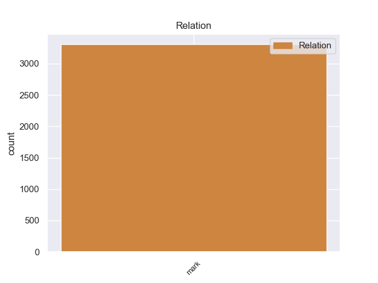
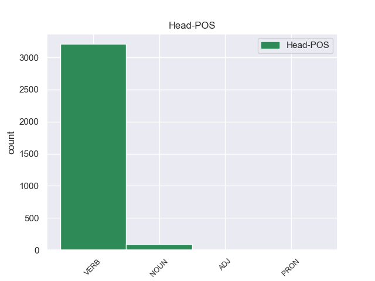
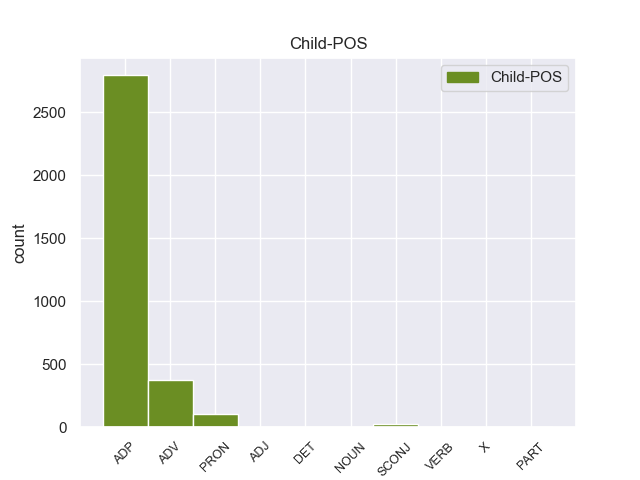

Distribution of features within this leaf



Agreement Rules sorted by frequency.
- When the dependent token is the marker(mark) of the head token, and the head token is VERB and the dependent token is ADP.
1 लिहाजा _ _ _ _ 0 _ _ _
2 , _ _ _ _ 0 _ _ _
3 अब _ _ _ _ 0 _ _ _
4 वक्त _ _ _ _ 0 _ _ _
5 आ _ _ _ _ 0 _ _ _
6 गया _ _ _ _ 0 _ _ _
7 है _ _ _ _ 0 _ _ _
8 कि _ _ _ _ 0 _ _ _
9 पूरी _ _ _ _ 0 _ _ _
10 दुनिया _ _ _ _ 0 _ _ _
11 के _ _ _ _ 0 _ _ _
12 अमन _ _ _ _ 0 _ _ _
13 पसंद _ _ _ _ 0 _ _ _
14 देश _ _ _ _ 0 _ _ _
15 अमेरिका _ _ _ _ 0 _ _ _
16 को _ _ _ _ 0 _ _ _
17 नीतियों _ _ _ _ 0 _ _ _
18 में _ _ _ _ 0 _ _ _
19 बदलाव _ _ _ _ 0 _ _ _
20 करने कर VERB VM Case=Acc|Number=Sing|VerbForm=Inf 0 _ _ _
21 का का ADP PSP AdpType=Post|Case=Nom|Gender=Masc|Number=Sing 20 mark _ ChunkId=VGNN|ChunkType=child|Translit=kā
22 दबाव _ _ _ _ 0 _ _ _
23 बनाए _ _ _ _ 0 _ _ _
24 । _ _ _ _ 0 _ _ _
1 लैब _ _ _ _ 0 _ _ _
2 रिपोर्ट _ _ _ _ 0 _ _ _
3 आने आ VERB VM Case=Acc|Number=Sing|Person=3|VerbForm=Inf 0 _ _ _
4 के _ _ _ _ 0 _ _ _
5 बाद बाद ADV NST AdpType=Post|Case=Nom|Gender=Masc|Number=Sing|Person=3 3 mark _ AltTag=ADV-NOUN|ChunkId=VGNN|ChunkType=child|Translit=bāda
6 राज्य _ _ _ _ 0 _ _ _
7 पुलिस _ _ _ _ 0 _ _ _
8 ने _ _ _ _ 0 _ _ _
9 आज _ _ _ _ 0 _ _ _
10 एक _ _ _ _ 0 _ _ _
11 उच्चस्तरीय _ _ _ _ 0 _ _ _
12 बैठक _ _ _ _ 0 _ _ _
13 की _ _ _ _ 0 _ _ _
14 और _ _ _ _ 0 _ _ _
15 मामले _ _ _ _ 0 _ _ _
16 में _ _ _ _ 0 _ _ _
17 आगे _ _ _ _ 0 _ _ _
18 की _ _ _ _ 0 _ _ _
19 कार्रवाई _ _ _ _ 0 _ _ _
20 की _ _ _ _ 0 _ _ _
21 रणनीति _ _ _ _ 0 _ _ _
22 तय _ _ _ _ 0 _ _ _
23 की _ _ _ _ 0 _ _ _
24 । _ _ _ _ 0 _ _ _
1 गौरतलब _ _ _ _ 0 _ _ _
2 है _ _ _ _ 0 _ _ _
3 कि _ _ _ _ 0 _ _ _
4 किसी कोई PRON PRP Case=Acc|Number=Sing|Person=3|PronType=Prs 6 mark _ ChunkId=NP|ChunkType=child|Tam=0|Translit=kisī|Vib=0
5 भी _ _ _ _ 0 _ _ _
6 संस्था संस्था NOUN NN Case=Acc|Gender=Fem|Number=Sing|Person=3 0 _ _ _
7 को _ _ _ _ 0 _ _ _
8 दान _ _ _ _ 0 _ _ _
9 देकर _ _ _ _ 0 _ _ _
10 दान _ _ _ _ 0 _ _ _
11 की _ _ _ _ 0 _ _ _
12 रकम _ _ _ _ 0 _ _ _
13 पर _ _ _ _ 0 _ _ _
14 १०० _ _ _ _ 0 _ _ _
15 फ़ीसदी _ _ _ _ 0 _ _ _
16 कर _ _ _ _ 0 _ _ _
17 राहत _ _ _ _ 0 _ _ _
18 का _ _ _ _ 0 _ _ _
19 दावा _ _ _ _ 0 _ _ _
20 नहीं _ _ _ _ 0 _ _ _
21 किया _ _ _ _ 0 _ _ _
22 जा _ _ _ _ 0 _ _ _
23 सकता _ _ _ _ 0 _ _ _
24 . _ _ _ _ 0 _ _ _
1 उस _ _ _ _ 0 _ _ _
2 दिन _ _ _ _ 0 _ _ _
3 तोपूछताछ _ _ _ _ 0 _ _ _
4 भर _ _ _ _ 0 _ _ _
5 करते _ _ _ _ 0 _ _ _
6 शाम _ _ _ _ 0 _ _ _
7 उतर _ _ _ _ 0 _ _ _
8 आयी _ _ _ _ 0 _ _ _
9 . _ _ _ _ 0 _ _ _
10 उसके _ _ _ _ 0 _ _ _
11 बाद _ _ _ _ 0 _ _ _
12 लगातार _ _ _ _ 0 _ _ _
13 वह _ _ _ _ 0 _ _ _
14 दो _ _ _ _ 0 _ _ _
15 माह _ _ _ _ 0 _ _ _
16 तक _ _ _ _ 0 _ _ _
17 वह _ _ _ _ 0 _ _ _
18 कटी _ _ _ _ 0 _ _ _
19 पतंगकी _ _ _ _ 0 _ _ _
20 तरह _ _ _ _ 0 _ _ _
21 गांव _ _ _ _ 0 _ _ _
22 और _ _ _ _ 0 _ _ _
23 कस्वे _ _ _ _ 0 _ _ _
24 के _ _ _ _ 0 _ _ _
25 बीच _ _ _ _ 0 _ _ _
26 चक्कर _ _ _ _ 0 _ _ _
27 काटता _ _ _ _ 0 _ _ _
28 रहा _ _ _ _ 0 _ _ _
29 था _ _ _ _ 0 _ _ _
30 . _ _ _ _ 0 _ _ _
31 बैंक _ _ _ _ 0 _ _ _
32 के _ _ _ _ 0 _ _ _
33 अफसर _ _ _ _ 0 _ _ _
34 बहाने _ _ _ _ 0 _ _ _
35 परबहाने _ _ _ _ 0 _ _ _
36 बनाते _ _ _ _ 0 _ _ _
37 टालते _ _ _ _ 0 _ _ _
38 रहे _ _ _ _ 0 _ _ _
39 थे _ _ _ _ 0 _ _ _
40 . _ _ _ _ 0 _ _ _
41 छोटे _ _ _ _ 0 _ _ _
42 - _ _ _ _ 0 _ _ _
43 बड़े _ _ _ _ 0 _ _ _
44 सभी _ _ _ _ 0 _ _ _
45 अफसरों _ _ _ _ 0 _ _ _
46 के _ _ _ _ 0 _ _ _
47 आगे _ _ _ _ 0 _ _ _
48 वह _ _ _ _ 0 _ _ _
49 फरियाद _ _ _ _ 0 _ _ _
50 करचुका _ _ _ _ 0 _ _ _
51 था _ _ _ _ 0 _ _ _
52 और _ _ _ _ 0 _ _ _
53 बीज _ _ _ _ 0 _ _ _
54 रोपने _ _ _ _ 0 _ _ _
55 के _ _ _ _ 0 _ _ _
56 वक्त _ _ _ _ 0 _ _ _
57 की _ _ _ _ 0 _ _ _
58 दुहाई _ _ _ _ 0 _ _ _
59 दे _ _ _ _ 0 _ _ _
60 चुका _ _ _ _ 0 _ _ _
61 था _ _ _ _ 0 _ _ _
62 . _ _ _ _ 0 _ _ _
63 किसी _ _ _ _ 0 _ _ _
64 के _ _ _ _ 0 _ _ _
65 कानों _ _ _ _ 0 _ _ _
66 पर _ _ _ _ 0 _ _ _
67 जूंन _ _ _ _ 0 _ _ _
68 रेंगी _ _ _ _ 0 _ _ _
69 थी _ _ _ _ 0 _ _ _
70 . _ _ _ _ 0 _ _ _
71 उनका _ _ _ _ 0 _ _ _
72 व्यवहार _ _ _ _ 0 _ _ _
73 वैसा _ _ _ _ 0 _ _ _
74 ही _ _ _ _ 0 _ _ _
75 दिखा _ _ _ _ 0 _ _ _
76 था _ _ _ _ 0 _ _ _
77 जैसा जैसा SCONJ CCC Case=Nom|Gender=Masc|Number=Sing 84 mark _ _
78 भिखारी _ _ _ _ 0 _ _ _
79 के _ _ _ _ 0 _ _ _
80 प्रति _ _ _ _ 0 _ _ _
81 किसीबिगड़ैल _ _ _ _ 0 _ _ _
82 सेठ _ _ _ _ 0 _ _ _
83 का _ _ _ _ 0 _ _ _
84 होता हो VERB VM Aspect=Imp|Gender=Masc|Number=Sing|Person=3|VerbForm=Part|Voice=Act 0 _ _ _
85 है _ _ _ _ 0 _ _ _
86 . _ _ _ _ 0 _ _ _
87 क्या _ _ _ _ 0 _ _ _
88 रह _ _ _ _ 0 _ _ _
89 गयी _ _ _ _ 0 _ _ _
90 थी _ _ _ _ 0 _ _ _
91 सरकार _ _ _ _ 0 _ _ _
92 योजना _ _ _ _ 0 _ _ _
93 की _ _ _ _ 0 _ _ _
94 अहमियत _ _ _ _ 0 _ _ _
95 ! _ _ _ _ 0 _ _ _
1 ' _ _ _ _ 0 _ _ _
2 लक्ष्मी _ _ _ _ 0 _ _ _
3 ' _ _ _ _ 0 _ _ _
4 ( _ _ _ _ 0 _ _ _
5 कम्पोजिट _ _ _ _ 0 _ _ _
6 ) _ _ _ _ 0 _ _ _
7 विशेष _ _ _ _ 0 _ _ _
8 लाभ _ _ _ _ 0 _ _ _
9 - _ _ _ _ 0 _ _ _
10 ~ _ _ _ _ 0 _ _ _
11 दायक _ _ _ _ 0 _ _ _
12 सिद्ध _ _ _ _ 0 _ _ _
13 हुआ _ _ _ _ 0 _ _ _
14 है _ _ _ _ 0 _ _ _
15 . _ _ _ _ 0 _ _ _
16 यही यह PRON PRP Case=Nom|Number=Sing|Person=3|PronType=Prs 27 mark _ _
17 नहीं _ _ _ _ 0 _ _ _
18 बल्किजलवायु _ _ _ _ 0 _ _ _
19 और _ _ _ _ 0 _ _ _
20 तापक्रम _ _ _ _ 0 _ _ _
21 का _ _ _ _ 0 _ _ _
22 भी _ _ _ _ 0 _ _ _
23 असर _ _ _ _ 0 _ _ _
24 उर्वरक _ _ _ _ 0 _ _ _
25 प्रयोग _ _ _ _ 0 _ _ _
26 पर _ _ _ _ 0 _ _ _
27 देखा देख VERB VM Aspect=Perf|Gender=Masc|Number=Sing|Person=3|VerbForm=Part|Voice=Pass 0 _ _ _
28 जाता _ _ _ _ 0 _ _ _
29 है _ _ _ _ 0 _ _ _
30 . _ _ _ _ 0 _ _ _
31 गर्म _ _ _ _ 0 _ _ _
32 मौसम _ _ _ _ 0 _ _ _
33 मेंउर्वरक _ _ _ _ 0 _ _ _
34 प्रयोग _ _ _ _ 0 _ _ _
35 कम _ _ _ _ 0 _ _ _
36 मात्रा _ _ _ _ 0 _ _ _
37 में _ _ _ _ 0 _ _ _
38 , _ _ _ _ 0 _ _ _
1 वह _ _ _ _ 0 _ _ _
2 सिर्फ _ _ _ _ 0 _ _ _
3 यहां _ _ _ _ 0 _ _ _
4 अपनी _ _ _ _ 0 _ _ _
5 जेब _ _ _ _ 0 _ _ _
6 गर्म _ _ _ _ 0 _ _ _
7 करने _ _ _ _ 0 _ _ _
8 और _ _ _ _ 0 _ _ _
9 अपने _ _ _ _ 0 _ _ _
10 मालिक _ _ _ _ 0 _ _ _
11 की _ _ _ _ 0 _ _ _
12 नौकरी _ _ _ _ 0 _ _ _
13 बजाने _ _ _ _ 0 _ _ _
14 के _ _ _ _ 0 _ _ _
15 लिए _ _ _ _ 0 _ _ _
16 आते _ _ _ _ 0 _ _ _
17 है _ _ _ _ 0 _ _ _
18 इसलिए _ _ _ _ 0 _ _ _
19 खनन _ _ _ _ 0 _ _ _
20 से _ _ _ _ 0 _ _ _
21 पैदा _ _ _ _ 0 _ _ _
22 होने _ _ _ _ 0 _ _ _
23 वाली _ _ _ _ 0 _ _ _
24 समस्या _ _ _ _ 0 _ _ _
25 से _ _ _ _ 0 _ _ _
26 उन्हें _ _ _ _ 0 _ _ _
27 कुछ _ _ _ _ 0 _ _ _
28 लेना _ _ _ _ 0 _ _ _
29 देना _ _ _ _ 0 _ _ _
30 नहीं _ _ _ _ 0 _ _ _
31 होता _ _ _ _ 0 _ _ _
32 यह _ _ _ _ 0 _ _ _
33 सच _ _ _ _ 0 _ _ _
34 है _ _ _ _ 0 _ _ _
35 कि _ _ _ _ 0 _ _ _
36 अब _ _ _ _ 0 _ _ _
37 दूसरे _ _ _ _ 0 _ _ _
38 राज्यों _ _ _ _ 0 _ _ _
39 के _ _ _ _ 0 _ _ _
40 मुकाबले _ _ _ _ 0 _ _ _
41 झारखण्ड _ _ _ _ 0 _ _ _
42 का _ _ _ _ 0 _ _ _
43 जो _ _ _ _ 0 _ _ _
44 नागरिक _ _ _ _ 0 _ _ _
45 समाज _ _ _ _ 0 _ _ _
46 है _ _ _ _ 0 _ _ _
47 , _ _ _ _ 0 _ _ _
48 वह _ _ _ _ 0 _ _ _
49 मजबूत _ _ _ _ 0 _ _ _
50 हुआ _ _ _ _ 0 _ _ _
51 है _ _ _ _ 0 _ _ _
52 छत्तीसगढ़ _ _ _ _ 0 _ _ _
53 में _ _ _ _ 0 _ _ _
54 वह _ _ _ _ 0 _ _ _
55 इतना _ _ _ _ 0 _ _ _
56 मजबूत _ _ _ _ 0 _ _ _
57 नहीं _ _ _ _ 0 _ _ _
58 है _ _ _ _ 0 _ _ _
59 यहां _ _ _ _ 0 _ _ _
60 वंचित _ _ _ _ 0 _ _ _
61 समाज _ _ _ _ 0 _ _ _
62 से _ _ _ _ 0 _ _ _
63 दयामणिबारला _ _ _ _ 0 _ _ _
64 जैसा जैसा SCONJ CCC Case=Nom|Gender=Masc|Number=Sing 71 mark _ _
65 नेतृत्व _ _ _ _ 0 _ _ _
66 निकला _ _ _ _ 0 _ _ _
67 है _ _ _ _ 0 _ _ _
68 इसी _ _ _ _ 0 _ _ _
69 जागरूकता _ _ _ _ 0 _ _ _
70 का _ _ _ _ 0 _ _ _
71 परिणाम परिणाम NOUN NN Case=Nom|Gender=Masc|Number=Sing|Person=3 0 _ _ _
72 है _ _ _ _ 0 _ _ _
73 कि _ _ _ _ 0 _ _ _
74 आज _ _ _ _ 0 _ _ _
75 वंचित _ _ _ _ 0 _ _ _
76 समाज _ _ _ _ 0 _ _ _
77 की _ _ _ _ 0 _ _ _
78 तरफ _ _ _ _ 0 _ _ _
79 से _ _ _ _ 0 _ _ _
80 आ _ _ _ _ 0 _ _ _
81 रही _ _ _ _ 0 _ _ _
82 आवाज _ _ _ _ 0 _ _ _
83 को _ _ _ _ 0 _ _ _
84 एकदम _ _ _ _ 0 _ _ _
85 से _ _ _ _ 0 _ _ _
86 अनसुना _ _ _ _ 0 _ _ _
87 नहीं _ _ _ _ 0 _ _ _
88 किया _ _ _ _ 0 _ _ _
89 जा _ _ _ _ 0 _ _ _
90 सकता _ _ _ _ 0 _ _ _
91 है _ _ _ _ 0 _ _ _
92 20 _ _ _ _ 0 _ _ _
93 - _ _ _ _ 0 _ _ _
94 25साल _ _ _ _ 0 _ _ _
95 पहले _ _ _ _ 0 _ _ _
96 जो _ _ _ _ 0 _ _ _
97 आवाज _ _ _ _ 0 _ _ _
98 उठती _ _ _ _ 0 _ _ _
99 थी _ _ _ _ 0 _ _ _
100 , _ _ _ _ 0 _ _ _
1 इस _ _ _ _ 0 _ _ _
2 बात _ _ _ _ 0 _ _ _
3 से _ _ _ _ 0 _ _ _
4 सभी _ _ _ _ 0 _ _ _
5 लोग _ _ _ _ 0 _ _ _
6 परिचित _ _ _ _ 0 _ _ _
7 हैंकि _ _ _ _ 0 _ _ _
8 यदि _ _ _ _ 0 _ _ _
9 समुन्द्र _ _ _ _ 0 _ _ _
10 - _ _ _ _ 0 _ _ _
11 तल _ _ _ _ 0 _ _ _
12 से _ _ _ _ 0 _ _ _
13 ३०४८ _ _ _ _ 0 _ _ _
14 मीटर _ _ _ _ 0 _ _ _
15 फुट _ _ _ _ 0 _ _ _
16 की _ _ _ _ 0 _ _ _
17 ऊचाई _ _ _ _ 0 _ _ _
18 की _ _ _ _ 0 _ _ _
19 जाती _ _ _ _ 0 _ _ _
20 है _ _ _ _ 0 _ _ _
21 तो _ _ _ _ 0 _ _ _
22 मनुष्य _ _ _ _ 0 _ _ _
23 कोपर्वतीय _ _ _ _ 0 _ _ _
24 बीमारियां _ _ _ _ 0 _ _ _
25 आ _ _ _ _ 0 _ _ _
26 धेरती _ _ _ _ 0 _ _ _
27 है _ _ _ _ 0 _ _ _
28 . _ _ _ _ 0 _ _ _
29 ३०४८ _ _ _ _ 0 _ _ _
30 मीटर _ _ _ _ 0 _ _ _
31 की _ _ _ _ 0 _ _ _
32 ऊचाई _ _ _ _ 0 _ _ _
33 पर _ _ _ _ 0 _ _ _
34 चढ़ते _ _ _ _ 0 _ _ _
35 - _ _ _ _ 0 _ _ _
36 चढ़ते _ _ _ _ 0 _ _ _
37 मानव _ _ _ _ 0 _ _ _
38 सांसकम _ _ _ _ 0 _ _ _
39 खीचनेलगताहै _ _ _ _ 0 _ _ _
40 , _ _ _ _ 0 _ _ _
41 उसके _ _ _ _ 0 _ _ _
42 सिर _ _ _ _ 0 _ _ _
43 में _ _ _ _ 0 _ _ _
44 दर्द _ _ _ _ 0 _ _ _
45 होने _ _ _ _ 0 _ _ _
46 लगता _ _ _ _ 0 _ _ _
47 है _ _ _ _ 0 _ _ _
48 , _ _ _ _ 0 _ _ _
49 शरीर _ _ _ _ 0 _ _ _
50 में _ _ _ _ 0 _ _ _
51 भारीपन _ _ _ _ 0 _ _ _
52 हो _ _ _ _ 0 _ _ _
53 जाताहै _ _ _ _ 0 _ _ _
54 और _ _ _ _ 0 _ _ _
55 उसे _ _ _ _ 0 _ _ _
56 थकावट _ _ _ _ 0 _ _ _
57 प्रतीत _ _ _ _ 0 _ _ _
58 होने _ _ _ _ 0 _ _ _
59 लगती _ _ _ _ 0 _ _ _
60 है _ _ _ _ 0 _ _ _
61 . _ _ _ _ 0 _ _ _
62 वास्तव _ _ _ _ 0 _ _ _
63 में _ _ _ _ 0 _ _ _
64 किसी _ _ _ _ 0 _ _ _
65 स्थान _ _ _ _ 0 _ _ _
66 की _ _ _ _ 0 _ _ _
67 प्राकृतिकदशा _ _ _ _ 0 _ _ _
68 और _ _ _ _ 0 _ _ _
69 वहां _ _ _ _ 0 _ _ _
70 के _ _ _ _ 0 _ _ _
71 मनुष्यों _ _ _ _ 0 _ _ _
72 का _ _ _ _ 0 _ _ _
73 जीवनाधार _ _ _ _ 0 _ _ _
74 है _ _ _ _ 0 _ _ _
75 , _ _ _ _ 0 _ _ _
76 क्योंकि _ _ _ _ 0 _ _ _
77 इन्ही _ _ _ _ 0 _ _ _
78 दोनों _ _ _ _ 0 _ _ _
79 वस्तुओं _ _ _ _ 0 _ _ _
80 परखान _ _ _ _ 0 _ _ _
81 - _ _ _ _ 0 _ _ _
82 पान _ _ _ _ 0 _ _ _
83 और _ _ _ _ 0 _ _ _
84 रहन _ _ _ _ 0 _ _ _
85 - _ _ _ _ 0 _ _ _
86 सहन _ _ _ _ 0 _ _ _
87 निर्भर _ _ _ _ 0 _ _ _
88 करता _ _ _ _ 0 _ _ _
89 है _ _ _ _ 0 _ _ _
90 . _ _ _ _ 0 _ _ _
91 जो _ _ _ _ 0 _ _ _
92 स्थान _ _ _ _ 0 _ _ _
93 पहाड़ी _ _ _ _ 0 _ _ _
94 है _ _ _ _ 0 _ _ _
95 वे _ _ _ _ 0 _ _ _
96 ज्यादा _ _ _ _ 0 _ _ _
97 ठंडेपाये _ _ _ _ 0 _ _ _
98 जायेंगे _ _ _ _ 0 _ _ _
99 , _ _ _ _ 0 _ _ _
100 सामुन्द्रिक _ _ _ _ 0 _ _ _
101 प्रदेशो _ _ _ _ 0 _ _ _
102 की _ _ _ _ 0 _ _ _
103 जलवायुसम _ _ _ _ 0 _ _ _
104 होगी _ _ _ _ 0 _ _ _
105 , _ _ _ _ 0 _ _ _
106 और _ _ _ _ 0 _ _ _
107 विषुवत _ _ _ _ 0 _ _ _
108 रेखा _ _ _ _ 0 _ _ _
109 के _ _ _ _ 0 _ _ _
110 समीपके _ _ _ _ 0 _ _ _
111 स्थान _ _ _ _ 0 _ _ _
112 गर्म _ _ _ _ 0 _ _ _
113 होंगे _ _ _ _ 0 _ _ _
114 . _ _ _ _ 0 _ _ _
115 मोटे _ _ _ _ 0 _ _ _
116 तौर _ _ _ _ 0 _ _ _
117 परकिसी _ _ _ _ 0 _ _ _
118 स्थान _ _ _ _ 0 _ _ _
119 की _ _ _ _ 0 _ _ _
120 जलवायु _ _ _ _ 0 _ _ _
121 का _ _ _ _ 0 _ _ _
122 प्रभाव _ _ _ _ 0 _ _ _
123 वहांके _ _ _ _ 0 _ _ _
124 रहने _ _ _ _ 0 _ _ _
125 वालों _ _ _ _ 0 _ _ _
126 के _ _ _ _ 0 _ _ _
127 रंग _ _ _ _ 0 _ _ _
128 - _ _ _ _ 0 _ _ _
129 रूप _ _ _ _ 0 _ _ _
130 , _ _ _ _ 0 _ _ _
131 भोजन _ _ _ _ 0 _ _ _
132 और _ _ _ _ 0 _ _ _
133 उनके _ _ _ _ 0 _ _ _
134 रहन _ _ _ _ 0 _ _ _
135 सहन _ _ _ _ 0 _ _ _
136 पर _ _ _ _ 0 _ _ _
137 अधिक _ _ _ _ 0 _ _ _
138 पड़ता _ _ _ _ 0 _ _ _
139 है _ _ _ _ 0 _ _ _
140 . _ _ _ _ 0 _ _ _
141 रंग _ _ _ _ 0 _ _ _
142 रूपके _ _ _ _ 0 _ _ _
143 विचार _ _ _ _ 0 _ _ _
144 से _ _ _ _ 0 _ _ _
145 हम _ _ _ _ 0 _ _ _
146 यह _ _ _ _ 0 _ _ _
147 कह _ _ _ _ 0 _ _ _
148 सकते _ _ _ _ 0 _ _ _
149 हैंकि _ _ _ _ 0 _ _ _
150 जो _ _ _ _ 0 _ _ _
151 मनुष्य _ _ _ _ 0 _ _ _
152 जितनी _ _ _ _ 0 _ _ _
153 गर्म _ _ _ _ 0 _ _ _
154 जलवायु _ _ _ _ 0 _ _ _
155 में _ _ _ _ 0 _ _ _
156 रहेगा रह VERB VM Gender=Masc|Mood=Ind|Number=Sing|Person=3|Tense=Fut|VerbForm=Fin|Voice=Act 0 _ _ _
157 वहउतना वहउतना X INTF Gender=Masc|Number=Sing 156 mark _ _
158 ही _ _ _ _ 0 _ _ _
159 काला _ _ _ _ 0 _ _ _
160 होगा _ _ _ _ 0 _ _ _
161 . _ _ _ _ 0 _ _ _
162 गर्म _ _ _ _ 0 _ _ _
163 औरनम _ _ _ _ 0 _ _ _
164 जलवायु _ _ _ _ 0 _ _ _
165 वाले _ _ _ _ 0 _ _ _
166 मोटे _ _ _ _ 0 _ _ _
167 और _ _ _ _ 0 _ _ _
168 सुस्त _ _ _ _ 0 _ _ _
169 पाये _ _ _ _ 0 _ _ _
170 जाते _ _ _ _ 0 _ _ _
171 हैं _ _ _ _ 0 _ _ _
172 . _ _ _ _ 0 _ _ _
173 इनमें _ _ _ _ 0 _ _ _
174 अफ्रीका _ _ _ _ 0 _ _ _
175 के _ _ _ _ 0 _ _ _
176 हब्शी _ _ _ _ 0 _ _ _
177 मुख्य _ _ _ _ 0 _ _ _
178 हैं _ _ _ _ 0 _ _ _
179 इसके _ _ _ _ 0 _ _ _
180 विपरीत _ _ _ _ 0 _ _ _
181 ठण्डी _ _ _ _ 0 _ _ _
182 जलवायु _ _ _ _ 0 _ _ _
183 में _ _ _ _ 0 _ _ _
184 रहने _ _ _ _ 0 _ _ _
185 वालेगोंरे _ _ _ _ 0 _ _ _
186 मजबूत _ _ _ _ 0 _ _ _
187 और _ _ _ _ 0 _ _ _
188 फुर्तीले _ _ _ _ 0 _ _ _
189 हुआ _ _ _ _ 0 _ _ _
190 करते _ _ _ _ 0 _ _ _
191 है _ _ _ _ 0 _ _ _
192 जैसे _ _ _ _ 0 _ _ _
193 कशमीरी _ _ _ _ 0 _ _ _
194 , _ _ _ _ 0 _ _ _
195 अफगानी _ _ _ _ 0 _ _ _
196 और _ _ _ _ 0 _ _ _
197 यूरोपवासी _ _ _ _ 0 _ _ _
198 . _ _ _ _ 0 _ _ _
199 गर्म _ _ _ _ 0 _ _ _
200 और _ _ _ _ 0 _ _ _
201 नम _ _ _ _ 0 _ _ _
202 जलवायु _ _ _ _ 0 _ _ _
203 में _ _ _ _ 0 _ _ _
204 रहने _ _ _ _ 0 _ _ _
205 वालेंलोग _ _ _ _ 0 _ _ _
206 कुछ _ _ _ _ 0 _ _ _
207 आलसी _ _ _ _ 0 _ _ _
208 हो _ _ _ _ 0 _ _ _
209 जाते _ _ _ _ 0 _ _ _
210 हैं _ _ _ _ 0 _ _ _
211 कि _ _ _ _ 0 _ _ _
212 उन्हें _ _ _ _ 0 _ _ _
213 अपनेजीवन _ _ _ _ 0 _ _ _
214 - _ _ _ _ 0 _ _ _
215 निर्वाह _ _ _ _ 0 _ _ _
216 की _ _ _ _ 0 _ _ _
217 सभी _ _ _ _ 0 _ _ _
218 वस्तुएं _ _ _ _ 0 _ _ _
219 प्रकृतिसे _ _ _ _ 0 _ _ _
220 या _ _ _ _ 0 _ _ _
221 थोड़े _ _ _ _ 0 _ _ _
222 परिश्रम _ _ _ _ 0 _ _ _
223 से _ _ _ _ 0 _ _ _
224 ही _ _ _ _ 0 _ _ _
225 प्राप्त _ _ _ _ 0 _ _ _
226 होजाती _ _ _ _ 0 _ _ _
227 हैं _ _ _ _ 0 _ _ _
228 . _ _ _ _ 0 _ _ _
229 इसके _ _ _ _ 0 _ _ _
230 विपरीत _ _ _ _ 0 _ _ _
231 ठंडे _ _ _ _ 0 _ _ _
232 प्रदेशों _ _ _ _ 0 _ _ _
233 के _ _ _ _ 0 _ _ _
234 निवासियों _ _ _ _ 0 _ _ _
235 को _ _ _ _ 0 _ _ _
236 अपने _ _ _ _ 0 _ _ _
237 जीवन _ _ _ _ 0 _ _ _
238 - _ _ _ _ 0 _ _ _
239 निर्वाह _ _ _ _ 0 _ _ _
240 केलिए _ _ _ _ 0 _ _ _
241 कठोर _ _ _ _ 0 _ _ _
242 परिश्रम _ _ _ _ 0 _ _ _
243 करना _ _ _ _ 0 _ _ _
244 पड़ता _ _ _ _ 0 _ _ _
245 है _ _ _ _ 0 _ _ _
246 . _ _ _ _ 0 _ _ _
1 याद _ _ _ _ 0 _ _ _
2 की _ _ _ _ 0 _ _ _
3 जानेवाली _ _ _ _ 0 _ _ _
4 घटनाओं _ _ _ _ 0 _ _ _
5 में _ _ _ _ 0 _ _ _
6 से _ _ _ _ 0 _ _ _
7 एक _ _ _ _ 0 _ _ _
8 है _ _ _ _ 0 _ _ _
9 . _ _ _ _ 0 _ _ _
10 इधर _ _ _ _ 0 _ _ _
11 उस _ _ _ _ 0 _ _ _
12 मरणासन्न _ _ _ _ 0 _ _ _
13 व्यक्ति _ _ _ _ 0 _ _ _
14 को _ _ _ _ 0 _ _ _
15 गंगा _ _ _ _ 0 _ _ _
16 - _ _ _ _ 0 _ _ _
17 जलपिलाया _ _ _ _ 0 _ _ _
18 जा _ _ _ _ 0 _ _ _
19 रहा _ _ _ _ 0 _ _ _
20 था _ _ _ _ 0 _ _ _
21 और _ _ _ _ 0 _ _ _
22 खाट _ _ _ _ 0 _ _ _
23 से _ _ _ _ 0 _ _ _
24 उतारकर _ _ _ _ 0 _ _ _
25 , _ _ _ _ 0 _ _ _
26 गोबर _ _ _ _ 0 _ _ _
27 लिपी _ _ _ _ 0 _ _ _
28 हुई _ _ _ _ 0 _ _ _
29 जमीन _ _ _ _ 0 _ _ _
30 पर _ _ _ _ 0 _ _ _
31 लिटाया _ _ _ _ 0 _ _ _
32 जा _ _ _ _ 0 _ _ _
33 रहाथा _ _ _ _ 0 _ _ _
34 और _ _ _ _ 0 _ _ _
35 उधर _ _ _ _ 0 _ _ _
36 , _ _ _ _ 0 _ _ _
37 तस्वीर _ _ _ _ 0 _ _ _
38 खींचने _ _ _ _ 0 _ _ _
39 की _ _ _ _ 0 _ _ _
40 तैयारी _ _ _ _ 0 _ _ _
41 भी _ _ _ _ 0 _ _ _
42 साथ _ _ _ _ 0 _ _ _
43 - _ _ _ _ 0 _ _ _
44 साथ _ _ _ _ 0 _ _ _
45 चल _ _ _ _ 0 _ _ _
46 रही _ _ _ _ 0 _ _ _
47 थी _ _ _ _ 0 _ _ _
48 . _ _ _ _ 0 _ _ _
49 किसी _ _ _ _ 0 _ _ _
50 तरह _ _ _ _ 0 _ _ _
51 दोव्यक्तियों _ _ _ _ 0 _ _ _
52 ने _ _ _ _ 0 _ _ _
53 मिलकर _ _ _ _ 0 _ _ _
54 उसे _ _ _ _ 0 _ _ _
55 बाँहों _ _ _ _ 0 _ _ _
56 के _ _ _ _ 0 _ _ _
57 सहारे _ _ _ _ 0 _ _ _
58 उठाकर _ _ _ _ 0 _ _ _
59 बिठाया _ _ _ _ 0 _ _ _
60 और _ _ _ _ 0 _ _ _
61 एक _ _ _ _ 0 _ _ _
62 ओर _ _ _ _ 0 _ _ _
63 सरककर _ _ _ _ 0 _ _ _
64 इसतरह _ _ _ _ 0 _ _ _
65 खड़े _ _ _ _ 0 _ _ _
66 हो _ _ _ _ 0 _ _ _
67 गये _ _ _ _ 0 _ _ _
68 कि _ _ _ _ 0 _ _ _
69 तस्वीर _ _ _ _ 0 _ _ _
70 में _ _ _ _ 0 _ _ _
71 न _ _ _ _ 0 _ _ _
72 आ _ _ _ _ 0 _ _ _
73 जायें _ _ _ _ 0 _ _ _
74 . _ _ _ _ 0 _ _ _
75 लेकिन _ _ _ _ 0 _ _ _
76 उसकी _ _ _ _ 0 _ _ _
77 बाँहों _ _ _ _ 0 _ _ _
78 को _ _ _ _ 0 _ _ _
79 थामे थामा VERB VM Case=Acc|Number=Plur|VerbForm=Inf 0 _ _ _
80 हुएउन हुएवह DET DEM Case=Acc|Number=Plur|Person=3|PronType=Dem 79 mark _ _
81 दोनों _ _ _ _ 0 _ _ _
82 के _ _ _ _ 0 _ _ _
83 हाथ _ _ _ _ 0 _ _ _
84 तस्वीर _ _ _ _ 0 _ _ _
85 में _ _ _ _ 0 _ _ _
86 आ _ _ _ _ 0 _ _ _
87 ही _ _ _ _ 0 _ _ _
88 गये _ _ _ _ 0 _ _ _
89 . _ _ _ _ 0 _ _ _
90 बापू _ _ _ _ 0 _ _ _
91 के _ _ _ _ 0 _ _ _
92 ओमल्या _ _ _ _ 0 _ _ _
93 के _ _ _ _ 0 _ _ _
94 खानदान _ _ _ _ 0 _ _ _
95 में _ _ _ _ 0 _ _ _
96 किसीकी _ _ _ _ 0 _ _ _
97 भी _ _ _ _ 0 _ _ _
98 तस्वीर _ _ _ _ 0 _ _ _
99 नहीं _ _ _ _ 0 _ _ _
100 खींची _ _ _ _ 0 _ _ _
101 थी _ _ _ _ 0 _ _ _
102 . _ _ _ _ 0 _ _ _
103 कैंची _ _ _ _ 0 _ _ _
104 की _ _ _ _ 0 _ _ _
105 नोक _ _ _ _ 0 _ _ _
106 से _ _ _ _ 0 _ _ _
107 कान _ _ _ _ 0 _ _ _
108 के _ _ _ _ 0 _ _ _
109 आगे _ _ _ _ 0 _ _ _
110 - _ _ _ _ 0 _ _ _
111 पीछे _ _ _ _ 0 _ _ _
112 खूब _ _ _ _ 0 _ _ _
113 दूर _ _ _ _ 0 _ _ _
114 तकगोल _ _ _ _ 0 _ _ _
115 निशान _ _ _ _ 0 _ _ _
116 बना _ _ _ _ 0 _ _ _
117 - _ _ _ _ 0 _ _ _
118 कर _ _ _ _ 0 _ _ _
119 वह _ _ _ _ 0 _ _ _
120 लम्बी _ _ _ _ 0 _ _ _
121 - _ _ _ _ 0 _ _ _
122 लम्बी _ _ _ _ 0 _ _ _
123 कलम _ _ _ _ 0 _ _ _
124 पर _ _ _ _ 0 _ _ _
125 उँगली _ _ _ _ 0 _ _ _
126 रखकर _ _ _ _ 0 _ _ _
127 अटक _ _ _ _ 0 _ _ _
128 जाता _ _ _ _ 0 _ _ _
129 है _ _ _ _ 0 _ _ _
130 . _ _ _ _ 0 _ _ _
131 पूछताहै _ _ _ _ 0 _ _ _
132 , _ _ _ _ 0 _ _ _
133 " _ _ _ _ 0 _ _ _
1 अन्य _ _ _ _ 0 _ _ _
2 भेदों _ _ _ _ 0 _ _ _
3 में _ _ _ _ 0 _ _ _
4 भी _ _ _ _ 0 _ _ _
5 विरेचनउत्तम _ _ _ _ 0 _ _ _
6 है _ _ _ _ 0 _ _ _
7 . _ _ _ _ 0 _ _ _
8 अधः _ _ _ _ 0 _ _ _
9 शुद्धि _ _ _ _ 0 _ _ _
10 के _ _ _ _ 0 _ _ _
11 लिए _ _ _ _ 0 _ _ _
12 विरेचन _ _ _ _ 0 _ _ _
13 श्रेष्ठ _ _ _ _ 0 _ _ _
14 कहा _ _ _ _ 0 _ _ _
15 है _ _ _ _ 0 _ _ _
16 . _ _ _ _ 0 _ _ _
17 शिरो _ _ _ _ 0 _ _ _
18 - _ _ _ _ 0 _ _ _
19 ~ _ _ _ _ 0 _ _ _
20 विरेचन _ _ _ _ 0 _ _ _
21 भी _ _ _ _ 0 _ _ _
22 पाण्डुरोगमें _ _ _ _ 0 _ _ _
23 सर्व _ _ _ _ 0 _ _ _
24 श्रेष्ठ _ _ _ _ 0 _ _ _
25 है _ _ _ _ 0 _ _ _
26 अतः _ _ _ _ 0 _ _ _
27 दोनों _ _ _ _ 0 _ _ _
28 विरेचनों _ _ _ _ 0 _ _ _
29 का _ _ _ _ 0 _ _ _
30 प्रयोग _ _ _ _ 0 _ _ _
31 करें _ _ _ _ 0 _ _ _
32 . _ _ _ _ 0 _ _ _
33 अधः _ _ _ _ 0 _ _ _
34 शुद्धि _ _ _ _ 0 _ _ _
35 के _ _ _ _ 0 _ _ _
36 लिएरेचन _ _ _ _ 0 _ _ _
37 दें _ _ _ _ 0 _ _ _
38 और _ _ _ _ 0 _ _ _
39 शिरो _ _ _ _ 0 _ _ _
40 - _ _ _ _ 0 _ _ _
41 ~ _ _ _ _ 0 _ _ _
42 विरेचन _ _ _ _ 0 _ _ _
43 के _ _ _ _ 0 _ _ _
44 लिए _ _ _ _ 0 _ _ _
45 वन्दाल _ _ _ _ 0 _ _ _
46 विरेचन _ _ _ _ 0 _ _ _
47 योग _ _ _ _ 0 _ _ _
48 दें _ _ _ _ 0 _ _ _
49 . _ _ _ _ 0 _ _ _
50 अंश्वकंचुकी _ _ _ _ 0 _ _ _
51 रस _ _ _ _ 0 _ _ _
52 - _ _ _ _ 0 _ _ _
53 शुद्ध _ _ _ _ 0 _ _ _
54 पारद _ _ _ _ 0 _ _ _
55 , _ _ _ _ 0 _ _ _
56 सुहाग _ _ _ _ 0 _ _ _
57 भुना _ _ _ _ 0 _ _ _
58 हुआ _ _ _ _ 0 _ _ _
59 , _ _ _ _ 0 _ _ _
60 शुद्ध _ _ _ _ 0 _ _ _
61 गंधक _ _ _ _ 0 _ _ _
62 , _ _ _ _ 0 _ _ _
63 शुद्ध _ _ _ _ 0 _ _ _
64 बत्सनाभ _ _ _ _ 0 _ _ _
65 , _ _ _ _ 0 _ _ _
66 सूंठ _ _ _ _ 0 _ _ _
67 , _ _ _ _ 0 _ _ _
68 कालीमिर्च _ _ _ _ 0 _ _ _
69 , _ _ _ _ 0 _ _ _
70 छोटी _ _ _ _ 0 _ _ _
71 पीपल _ _ _ _ 0 _ _ _
72 , _ _ _ _ 0 _ _ _
73 हरड़ _ _ _ _ 0 _ _ _
74 दल _ _ _ _ 0 _ _ _
75 , _ _ _ _ 0 _ _ _
76 बहेड़ा _ _ _ _ 0 _ _ _
77 दल _ _ _ _ 0 _ _ _
78 , _ _ _ _ 0 _ _ _
79 शुद्ध _ _ _ _ 0 _ _ _
80 हरताल _ _ _ _ 0 _ _ _
81 या _ _ _ _ 0 _ _ _
82 माणिक्य _ _ _ _ 0 _ _ _
83 रस _ _ _ _ 0 _ _ _
84 येसब _ _ _ _ 0 _ _ _
85 समभाग _ _ _ _ 0 _ _ _
86 और _ _ _ _ 0 _ _ _
87 शुद्ध _ _ _ _ 0 _ _ _
88 जमालगोटा _ _ _ _ 0 _ _ _
89 सबको _ _ _ _ 0 _ _ _
90 समान _ _ _ _ 0 _ _ _
91 लेवें _ _ _ _ 0 _ _ _
92 . _ _ _ _ 0 _ _ _
93 प्रथम _ _ _ _ 0 _ _ _
94 पारद _ _ _ _ 0 _ _ _
95 तथा _ _ _ _ 0 _ _ _
96 गन्धक _ _ _ _ 0 _ _ _
97 की _ _ _ _ 0 _ _ _
98 कज्जलीकर _ _ _ _ 0 _ _ _
99 , _ _ _ _ 0 _ _ _
100 उसमें _ _ _ _ 0 _ _ _
101 हरताल _ _ _ _ 0 _ _ _
102 मिलाकर _ _ _ _ 0 _ _ _
103 खरल _ _ _ _ 0 _ _ _
104 करें _ _ _ _ 0 _ _ _
105 कि _ _ _ _ 0 _ _ _
106 उस _ _ _ _ 0 _ _ _
107 के _ _ _ _ 0 _ _ _
108 सूक्ष्म _ _ _ _ 0 _ _ _
109 कण _ _ _ _ 0 _ _ _
110 भी _ _ _ _ 0 _ _ _
111 न _ _ _ _ 0 _ _ _
112 दीखें _ _ _ _ 0 _ _ _
113 , _ _ _ _ 0 _ _ _
114 फिर _ _ _ _ 0 _ _ _
115 अन्यद्रव्यों _ _ _ _ 0 _ _ _
116 का _ _ _ _ 0 _ _ _
117 सूक्ष्म _ _ _ _ 0 _ _ _
118 चूर्ण _ _ _ _ 0 _ _ _
119 वस्त्रपूत _ _ _ _ 0 _ _ _
120 कर _ _ _ _ 0 _ _ _
121 मिला _ _ _ _ 0 _ _ _
122 दें _ _ _ _ 0 _ _ _
123 . _ _ _ _ 0 _ _ _
124 फिर _ _ _ _ 0 _ _ _
125 भांगरे _ _ _ _ 0 _ _ _
126 के _ _ _ _ 0 _ _ _
127 रस _ _ _ _ 0 _ _ _
128 में _ _ _ _ 0 _ _ _
129 २१ _ _ _ _ 0 _ _ _
130 दिनमर्दन _ _ _ _ 0 _ _ _
131 कर _ _ _ _ 0 _ _ _
132 २५० _ _ _ _ 0 _ _ _
133 - _ _ _ _ 0 _ _ _
134 २५० _ _ _ _ 0 _ _ _
135 मि _ _ _ _ 0 _ _ _
136 . _ _ _ _ 0 _ _ _
137 ग्रा ग्रा ADJ JJ Case=Nom|Gender=Masc|Number=Sing 0 _ _ _
138 . _ _ _ _ 0 _ _ _
139 की का ADP PSP AdpType=Post|Case=Nom|Gender=Fem|Number=Sing 137 mark _ _
140 गोलियां _ _ _ _ 0 _ _ _
141 बना _ _ _ _ 0 _ _ _
142 लें _ _ _ _ 0 _ _ _
143 . _ _ _ _ 0 _ _ _
144 छाया _ _ _ _ 0 _ _ _
145 में _ _ _ _ 0 _ _ _
146 सुखाकर _ _ _ _ 0 _ _ _
147 सुरक्षितरखना _ _ _ _ 0 _ _ _
148 . _ _ _ _ 0 _ _ _
1 ऐसी _ _ _ _ 0 _ _ _
2 सूरत _ _ _ _ 0 _ _ _
3 में _ _ _ _ 0 _ _ _
4 रिश्वत _ _ _ _ 0 _ _ _
5 देने दे VERB VM Case=Acc|Number=Sing|VerbForm=Inf 0 _ _ _
6 वाला _ _ _ _ 0 _ _ _
7 शख्स शख्स NOUN NN Case=Nom|Gender=Masc|Number=Sing|Person=3 5 mark _ _
8 रिश्वत _ _ _ _ 0 _ _ _
9 लेने _ _ _ _ 0 _ _ _
10 वाले _ _ _ _ 0 _ _ _
11 को _ _ _ _ 0 _ _ _
12 पकड़वाने _ _ _ _ 0 _ _ _
13 में _ _ _ _ 0 _ _ _
14 सहयोगकरना _ _ _ _ 0 _ _ _
15 चाहेगा _ _ _ _ 0 _ _ _
16 । _ _ _ _ 0 _ _ _
1 श्रीलंका _ _ _ _ 0 _ _ _
2 के _ _ _ _ 0 _ _ _
3 पूर्व _ _ _ _ 0 _ _ _
4 कप्तान _ _ _ _ 0 _ _ _
5 महेलाजयवर्धने _ _ _ _ 0 _ _ _
6 ने _ _ _ _ 0 _ _ _
7 टीम _ _ _ _ 0 _ _ _
8 के _ _ _ _ 0 _ _ _
9 अपने _ _ _ _ 0 _ _ _
10 साथियों _ _ _ _ 0 _ _ _
11 को _ _ _ _ 0 _ _ _
12 आगामी _ _ _ _ 0 _ _ _
13 मैचों _ _ _ _ 0 _ _ _
14 में _ _ _ _ 0 _ _ _
15 कड़ी _ _ _ _ 0 _ _ _
16 मिलने मिल VERB VM Case=Acc|Number=Sing|VerbForm=Inf 0 _ _ _
17 वाली _ _ _ _ 0 _ _ _
18 कड़ी कड़ा ADJ JJ Case=Nom|Gender=Fem|Number=Sing 16 mark _ _
19 चुनौती _ _ _ _ 0 _ _ _
20 के _ _ _ _ 0 _ _ _
21 प्रति _ _ _ _ 0 _ _ _
22 चेताया _ _ _ _ 0 _ _ _
23 । _ _ _ _ 0 _ _ _
1 लेकिनआजकल _ _ _ _ 0 _ _ _
2 भूस्थिर _ _ _ _ 0 _ _ _
3 कक्षाओं _ _ _ _ 0 _ _ _
4 में _ _ _ _ 0 _ _ _
5 बिठाए _ _ _ _ 0 _ _ _
6 गए _ _ _ _ 0 _ _ _
7 संचार _ _ _ _ 0 _ _ _
8 उपग्रहों _ _ _ _ 0 _ _ _
9 ने _ _ _ _ 0 _ _ _
10 क्लार्क _ _ _ _ 0 _ _ _
11 के _ _ _ _ 0 _ _ _
12 सपने _ _ _ _ 0 _ _ _
13 को _ _ _ _ 0 _ _ _
14 साकारकर _ _ _ _ 0 _ _ _
15 दिया _ _ _ _ 0 _ _ _
16 है _ _ _ _ 0 _ _ _
17 . _ _ _ _ 0 _ _ _
18 और _ _ _ _ 0 _ _ _
19 अब _ _ _ _ 0 _ _ _
20 तो _ _ _ _ 0 _ _ _
21 वैज्ञानिक _ _ _ _ 0 _ _ _
22 एक _ _ _ _ 0 _ _ _
23 ऐसे _ _ _ _ 0 _ _ _
24 सौर _ _ _ _ 0 _ _ _
25 बिजलीघर _ _ _ _ 0 _ _ _
26 को _ _ _ _ 0 _ _ _
27 अंतरिक्ष _ _ _ _ 0 _ _ _
28 की _ _ _ _ 0 _ _ _
29 भूस्थिरकक्षा _ _ _ _ 0 _ _ _
30 में _ _ _ _ 0 _ _ _
31 स्थापित _ _ _ _ 0 _ _ _
32 किए _ _ _ _ 0 _ _ _
33 जाने _ _ _ _ 0 _ _ _
34 में _ _ _ _ 0 _ _ _
35 जुट _ _ _ _ 0 _ _ _
36 गए _ _ _ _ 0 _ _ _
37 हैं _ _ _ _ 0 _ _ _
38 . _ _ _ _ 0 _ _ _
39 जिससे _ _ _ _ 0 _ _ _
40 काफी _ _ _ _ 0 _ _ _
41 सारी _ _ _ _ 0 _ _ _
42 ऊर्जा _ _ _ _ 0 _ _ _
43 पृथ्वी _ _ _ _ 0 _ _ _
44 परभेजी _ _ _ _ 0 _ _ _
45 जा _ _ _ _ 0 _ _ _
46 सकेगी _ _ _ _ 0 _ _ _
47 . _ _ _ _ 0 _ _ _
48 भूस्थिर _ _ _ _ 0 _ _ _
49 कक्षा _ _ _ _ 0 _ _ _
50 में _ _ _ _ 0 _ _ _
51 स्थापित _ _ _ _ 0 _ _ _
52 किए _ _ _ _ 0 _ _ _
53 जाने _ _ _ _ 0 _ _ _
54 पर _ _ _ _ 0 _ _ _
55 यह _ _ _ _ 0 _ _ _
56 बिजली _ _ _ _ 0 _ _ _
57 घर _ _ _ _ 0 _ _ _
58 पृथ्वी _ _ _ _ 0 _ _ _
59 केलिए _ _ _ _ 0 _ _ _
60 स्थिर _ _ _ _ 0 _ _ _
61 सा _ _ _ _ 0 _ _ _
62 ही _ _ _ _ 0 _ _ _
63 प्रतीत _ _ _ _ 0 _ _ _
64 होगा _ _ _ _ 0 _ _ _
65 . _ _ _ _ 0 _ _ _
66 वैसे _ _ _ _ 0 _ _ _
67 तो _ _ _ _ 0 _ _ _
68 सौर _ _ _ _ 0 _ _ _
69 बिजलीघर _ _ _ _ 0 _ _ _
70 को _ _ _ _ 0 _ _ _
71 पृथ्वी _ _ _ _ 0 _ _ _
72 पर _ _ _ _ 0 _ _ _
73 भी _ _ _ _ 0 _ _ _
74 स्थापित _ _ _ _ 0 _ _ _
75 किया _ _ _ _ 0 _ _ _
76 जा _ _ _ _ 0 _ _ _
77 सकता _ _ _ _ 0 _ _ _
78 है _ _ _ _ 0 _ _ _
79 . _ _ _ _ 0 _ _ _
80 लेकिन _ _ _ _ 0 _ _ _
81 पृथ्वी _ _ _ _ 0 _ _ _
82 परइन्हें _ _ _ _ 0 _ _ _
83 ७ _ _ _ _ 0 _ _ _
84 - _ _ _ _ 0 _ _ _
85 ८ _ _ _ _ 0 _ _ _
86 घण्टे _ _ _ _ 0 _ _ _
87 के _ _ _ _ 0 _ _ _
88 लिए _ _ _ _ 0 _ _ _
89 ही _ _ _ _ 0 _ _ _
90 धूप _ _ _ _ 0 _ _ _
91 मिल _ _ _ _ 0 _ _ _
92 पाती _ _ _ _ 0 _ _ _
93 है _ _ _ _ 0 _ _ _
94 जबकि _ _ _ _ 0 _ _ _
95 अंतरिक्ष _ _ _ _ 0 _ _ _
96 में _ _ _ _ 0 _ _ _
97 बनने _ _ _ _ 0 _ _ _
98 वाले _ _ _ _ 0 _ _ _
99 सौरबिजलीघर _ _ _ _ 0 _ _ _
100 को _ _ _ _ 0 _ _ _
101 चौबीसों _ _ _ _ 0 _ _ _
102 घण्टे _ _ _ _ 0 _ _ _
103 सौर _ _ _ _ 0 _ _ _
104 ऊर्जा _ _ _ _ 0 _ _ _
105 प्राप्त _ _ _ _ 0 _ _ _
106 हो _ _ _ _ 0 _ _ _
107 सकेगी _ _ _ _ 0 _ _ _
108 . _ _ _ _ 0 _ _ _
109 इसके _ _ _ _ 0 _ _ _
110 अतिरिक्त _ _ _ _ 0 _ _ _
111 अंतरिक्षमें _ _ _ _ 0 _ _ _
112 पृथ्वी _ _ _ _ 0 _ _ _
113 की _ _ _ _ 0 _ _ _
114 अपेक्षा _ _ _ _ 0 _ _ _
115 ३५ _ _ _ _ 0 _ _ _
116 प्रतिशत _ _ _ _ 0 _ _ _
117 अधिक _ _ _ _ 0 _ _ _
118 एवं _ _ _ _ 0 _ _ _
119 लगभग _ _ _ _ 0 _ _ _
120 स्थिर _ _ _ _ 0 _ _ _
121 सौर _ _ _ _ 0 _ _ _
122 विकिरण _ _ _ _ 0 _ _ _
123 प्राप्त _ _ _ _ 0 _ _ _
124 होगाजिससे _ _ _ _ 0 _ _ _
125 अधिक _ _ _ _ 0 _ _ _
126 बिजली _ _ _ _ 0 _ _ _
127 बनाई _ _ _ _ 0 _ _ _
128 जा _ _ _ _ 0 _ _ _
129 सकेगी _ _ _ _ 0 _ _ _
130 . _ _ _ _ 0 _ _ _
131 उदाहरण _ _ _ _ 0 _ _ _
132 के _ _ _ _ 0 _ _ _
133 लिए _ _ _ _ 0 _ _ _
134 १०० _ _ _ _ 0 _ _ _
135 मेगावाट _ _ _ _ 0 _ _ _
136 क्षमता _ _ _ _ 0 _ _ _
137 को _ _ _ _ 0 _ _ _
138 सौरपट्टी _ _ _ _ 0 _ _ _
139 पृथ्वी _ _ _ _ 0 _ _ _
140 पर _ _ _ _ 0 _ _ _
141 १६ _ _ _ _ 0 _ _ _
142 करोड़ _ _ _ _ 0 _ _ _
143 यूनिट _ _ _ _ 0 _ _ _
144 बिजली _ _ _ _ 0 _ _ _
145 जबकि _ _ _ _ 0 _ _ _
146 अंतरिक्ष _ _ _ _ 0 _ _ _
147 में _ _ _ _ 0 _ _ _
148 ११० _ _ _ _ 0 _ _ _
149 करोड़ _ _ _ _ 0 _ _ _
150 यूनिट _ _ _ _ 0 _ _ _
151 बिजलीबनाएगी बिजलीबना VERB VM Gender=Fem|Mood=Ind|Number=Sing|Person=3|Polite=Form|Tense=Fut|VerbForm=Fin|Voice=Act 0 _ _ _
152 . _ _ _ _ 0 _ _ _
153 इन्हीं _ _ _ _ 0 _ _ _
154 लाभों _ _ _ _ 0 _ _ _
155 को _ _ _ _ 0 _ _ _
156 ध्यान _ _ _ _ 0 _ _ _
157 में _ _ _ _ 0 _ _ _
158 रखकर _ _ _ _ 0 _ _ _
159 डॉ _ _ _ _ 0 _ _ _
160 पीटर _ _ _ _ 0 _ _ _
161 ग्लेजर _ _ _ _ 0 _ _ _
162 ने _ _ _ _ 0 _ _ _
163 सर्व _ _ _ _ 0 _ _ _
164 प्रथम _ _ _ _ 0 _ _ _
165 १९६८ _ _ _ _ 0 _ _ _
166 मेंअंतरिक्ष _ _ _ _ 0 _ _ _
167 में _ _ _ _ 0 _ _ _
168 लटकने _ _ _ _ 0 _ _ _
169 वाले _ _ _ _ 0 _ _ _
170 इस _ _ _ _ 0 _ _ _
171 बिजलीघर _ _ _ _ 0 _ _ _
172 की _ _ _ _ 0 _ _ _
173 रूपरेखा _ _ _ _ 0 _ _ _
174 तैयार _ _ _ _ 0 _ _ _
175 की कर VERB VM Aspect=Perf|Gender=Fem|Number=Sing|VerbForm=Part|Voice=Act 151 mark _ _
176 थी _ _ _ _ 0 _ _ _
177 और _ _ _ _ 0 _ _ _
178 तभी _ _ _ _ 0 _ _ _
179 से _ _ _ _ 0 _ _ _
180 इसकेविषय _ _ _ _ 0 _ _ _
181 में _ _ _ _ 0 _ _ _
182 गहन _ _ _ _ 0 _ _ _
183 शोध _ _ _ _ 0 _ _ _
184 कार्य _ _ _ _ 0 _ _ _
185 चल _ _ _ _ 0 _ _ _
186 रहा _ _ _ _ 0 _ _ _
187 है _ _ _ _ 0 _ _ _
188 . _ _ _ _ 0 _ _ _
189 अंतरिक्ष _ _ _ _ 0 _ _ _
190 में _ _ _ _ 0 _ _ _
191 लटकने _ _ _ _ 0 _ _ _
192 वाले _ _ _ _ 0 _ _ _
193 इस _ _ _ _ 0 _ _ _
194 बिजलीघर _ _ _ _ 0 _ _ _
195 का _ _ _ _ 0 _ _ _
196 सबसे _ _ _ _ 0 _ _ _
197 महत्वपूर्ण _ _ _ _ 0 _ _ _
198 हिस्सा _ _ _ _ 0 _ _ _
199 सौर _ _ _ _ 0 _ _ _
200 - _ _ _ _ 0 _ _ _
201 पट्टी _ _ _ _ 0 _ _ _
202 मेंलगी _ _ _ _ 0 _ _ _
203 सौर _ _ _ _ 0 _ _ _
204 सेलें _ _ _ _ 0 _ _ _
205 होंगी _ _ _ _ 0 _ _ _
206 . _ _ _ _ 0 _ _ _
207 ये _ _ _ _ 0 _ _ _
208 सिलिकान _ _ _ _ 0 _ _ _
209 जैसी _ _ _ _ 0 _ _ _
210 धातु _ _ _ _ 0 _ _ _
211 की _ _ _ _ 0 _ _ _
212 बहुत _ _ _ _ 0 _ _ _
213 पतली _ _ _ _ 0 _ _ _
214 फिल्म _ _ _ _ 0 _ _ _
215 से _ _ _ _ 0 _ _ _
216 बनती _ _ _ _ 0 _ _ _
217 हैंजिनकी _ _ _ _ 0 _ _ _
218 मोटाई _ _ _ _ 0 _ _ _
219 एंगस्ट्राम _ _ _ _ 0 _ _ _
220 ( _ _ _ _ 0 _ _ _
221 एक _ _ _ _ 0 _ _ _
222 सेओमीओ _ _ _ _ 0 _ _ _
223 का _ _ _ _ 0 _ _ _
224 दस _ _ _ _ 0 _ _ _
225 करोड़वां _ _ _ _ 0 _ _ _
226 भाग _ _ _ _ 0 _ _ _
227 ) _ _ _ _ 0 _ _ _
228 में _ _ _ _ 0 _ _ _
229 नापी _ _ _ _ 0 _ _ _
230 जाती _ _ _ _ 0 _ _ _
231 है _ _ _ _ 0 _ _ _
232 . _ _ _ _ 0 _ _ _
233 विश्व _ _ _ _ 0 _ _ _
234 की _ _ _ _ 0 _ _ _
235 सबसे _ _ _ _ 0 _ _ _
236 पहली _ _ _ _ 0 _ _ _
237 सोर _ _ _ _ 0 _ _ _
238 सेल _ _ _ _ 0 _ _ _
239 १९५० _ _ _ _ 0 _ _ _
240 में _ _ _ _ 0 _ _ _
241 अमेरिका _ _ _ _ 0 _ _ _
242 की _ _ _ _ 0 _ _ _
243 बैल _ _ _ _ 0 _ _ _
244 टेलीफोन _ _ _ _ 0 _ _ _
245 प्रयोगशाला _ _ _ _ 0 _ _ _
246 केवैज्ञानिक _ _ _ _ 0 _ _ _
247 चैपिन _ _ _ _ 0 _ _ _
248 , _ _ _ _ 0 _ _ _
249 फुलर _ _ _ _ 0 _ _ _
250 एवं _ _ _ _ 0 _ _ _
251 पियर्सन _ _ _ _ 0 _ _ _
252 ने _ _ _ _ 0 _ _ _
253 तैयार _ _ _ _ 0 _ _ _
254 की _ _ _ _ 0 _ _ _
255 थी _ _ _ _ 0 _ _ _
256 . _ _ _ _ 0 _ _ _
257 और _ _ _ _ 0 _ _ _
258 सेलों _ _ _ _ 0 _ _ _
259 के _ _ _ _ 0 _ _ _
260 निर्माण _ _ _ _ 0 _ _ _
261 मेंकाफी _ _ _ _ 0 _ _ _
262 जटिल _ _ _ _ 0 _ _ _
263 तकनीक _ _ _ _ 0 _ _ _
264 की _ _ _ _ 0 _ _ _
265 आवश्यकता _ _ _ _ 0 _ _ _
266 होती _ _ _ _ 0 _ _ _
267 है _ _ _ _ 0 _ _ _
268 इसी _ _ _ _ 0 _ _ _
269 कारण _ _ _ _ 0 _ _ _
270 ये _ _ _ _ 0 _ _ _
271 काफी _ _ _ _ 0 _ _ _
272 महँगी _ _ _ _ 0 _ _ _
273 पड़ती _ _ _ _ 0 _ _ _
274 हैं _ _ _ _ 0 _ _ _
275 . _ _ _ _ 0 _ _ _
276 अनुमानकिया _ _ _ _ 0 _ _ _
277 जाता _ _ _ _ 0 _ _ _
278 है _ _ _ _ 0 _ _ _
279 कि _ _ _ _ 0 _ _ _
280 १०० _ _ _ _ 0 _ _ _
281 रूओ _ _ _ _ 0 _ _ _
282 प्रति _ _ _ _ 0 _ _ _
283 पीक _ _ _ _ 0 _ _ _
284 वाट _ _ _ _ 0 _ _ _
285 मूल्य _ _ _ _ 0 _ _ _
286 पर _ _ _ _ 0 _ _ _
287 सौर _ _ _ _ 0 _ _ _
288 सेल _ _ _ _ 0 _ _ _
289 प्रकाश _ _ _ _ 0 _ _ _
290 के _ _ _ _ 0 _ _ _
291 स्त्रोत _ _ _ _ 0 _ _ _
292 केरूप _ _ _ _ 0 _ _ _
293 में _ _ _ _ 0 _ _ _
294 केरोसिन _ _ _ _ 0 _ _ _
295 के _ _ _ _ 0 _ _ _
296 प्रतिस्पर्द्धा _ _ _ _ 0 _ _ _
297 कर _ _ _ _ 0 _ _ _
298 सकेंगी _ _ _ _ 0 _ _ _
299 . _ _ _ _ 0 _ _ _
1 हमारी _ _ _ _ 0 _ _ _
2 फॉर्म _ _ _ _ 0 _ _ _
3 अच्छी अच्छी ADJ JJ Case=Nom|Gender=Fem|Number=Sing 0 _ _ _
4 थी _ _ _ _ 0 _ _ _
5 और _ _ _ _ 0 _ _ _
6 कॉमनवेल्थगेम्स _ _ _ _ 0 _ _ _
7 से _ _ _ _ 0 _ _ _
8 ठीक _ _ _ _ 0 _ _ _
9 पहले पहले ADV NST AdpType=Post|Case=Nom|Gender=Masc|Number=Sing|Person=3 3 mark _ _
10 शंघाई _ _ _ _ 0 _ _ _
11 में _ _ _ _ 0 _ _ _
12 वर्ल्डकप _ _ _ _ 0 _ _ _
13 के _ _ _ _ 0 _ _ _
14 चौथे _ _ _ _ 0 _ _ _
15 स्टेज _ _ _ _ 0 _ _ _
16 में _ _ _ _ 0 _ _ _
17 पुरुष _ _ _ _ 0 _ _ _
18 टीम _ _ _ _ 0 _ _ _
19 चैंपियन _ _ _ _ 0 _ _ _
20 बनी _ _ _ _ 0 _ _ _
21 थी _ _ _ _ 0 _ _ _
22 । _ _ _ _ 0 _ _ _
1 ईसा _ _ _ _ 0 _ _ _
2 की _ _ _ _ 0 _ _ _
3 छठी _ _ _ _ 0 _ _ _
4 - _ _ _ _ 0 _ _ _
5 सातवीं _ _ _ _ 0 _ _ _
6 शती _ _ _ _ 0 _ _ _
7 तक _ _ _ _ 0 _ _ _
8 इस _ _ _ _ 0 _ _ _
9 नदी _ _ _ _ 0 _ _ _
10 में _ _ _ _ 0 _ _ _
11 पानी _ _ _ _ 0 _ _ _
12 थाऔर _ _ _ _ 0 _ _ _
13 उसके _ _ _ _ 0 _ _ _
14 तट _ _ _ _ 0 _ _ _
15 पर _ _ _ _ 0 _ _ _
16 रंगमहल _ _ _ _ 0 _ _ _
17 जैसे _ _ _ _ 0 _ _ _
18 सम्पन्न _ _ _ _ 0 _ _ _
19 नगर _ _ _ _ 0 _ _ _
20 बसे _ _ _ _ 0 _ _ _
21 हुए _ _ _ _ 0 _ _ _
22 थे _ _ _ _ 0 _ _ _
23 , _ _ _ _ 0 _ _ _
24 जो _ _ _ _ 0 _ _ _
25 अब _ _ _ _ 0 _ _ _
26 अस्तित्व _ _ _ _ 0 _ _ _
27 - _ _ _ _ 0 _ _ _
28 शेष _ _ _ _ 0 _ _ _
29 हो _ _ _ _ 0 _ _ _
30 गएहैं _ _ _ _ 0 _ _ _
31 . _ _ _ _ 0 _ _ _
32 यदि _ _ _ _ 0 _ _ _
33 हम _ _ _ _ 0 _ _ _
34 प्रागैतिहास _ _ _ _ 0 _ _ _
35 की _ _ _ _ 0 _ _ _
36 खोज _ _ _ _ 0 _ _ _
37 में _ _ _ _ 0 _ _ _
38 जाए _ _ _ _ 0 _ _ _
39 तो _ _ _ _ 0 _ _ _
40 यह _ _ _ _ 0 _ _ _
41 क्षेत्र _ _ _ _ 0 _ _ _
42 हड़प्पाकालीन _ _ _ _ 0 _ _ _
43 संस्कृतिका _ _ _ _ 0 _ _ _
44 एक _ _ _ _ 0 _ _ _
45 प्रमुख _ _ _ _ 0 _ _ _
46 केन्द्र _ _ _ _ 0 _ _ _
47 रहा _ _ _ _ 0 _ _ _
48 है _ _ _ _ 0 _ _ _
49 . _ _ _ _ 0 _ _ _
50 भारत _ _ _ _ 0 _ _ _
51 में _ _ _ _ 0 _ _ _
52 आयुर्वेद _ _ _ _ 0 _ _ _
53 के _ _ _ _ 0 _ _ _
54 जनक _ _ _ _ 0 _ _ _
55 समझे _ _ _ _ 0 _ _ _
56 जाने _ _ _ _ 0 _ _ _
57 वाले _ _ _ _ 0 _ _ _
58 चरक _ _ _ _ 0 _ _ _
59 और _ _ _ _ 0 _ _ _
60 सुश्रुत _ _ _ _ 0 _ _ _
61 को _ _ _ _ 0 _ _ _
62 गन्ने _ _ _ _ 0 _ _ _
63 की _ _ _ _ 0 _ _ _
64 विभिन्नजातियों _ _ _ _ 0 _ _ _
65 , _ _ _ _ 0 _ _ _
66 उससे _ _ _ _ 0 _ _ _
67 बनने _ _ _ _ 0 _ _ _
68 वाले _ _ _ _ 0 _ _ _
69 विभिन्न _ _ _ _ 0 _ _ _
70 पदार्थों _ _ _ _ 0 _ _ _
71 और _ _ _ _ 0 _ _ _
72 उनके _ _ _ _ 0 _ _ _
73 औषधीय _ _ _ _ 0 _ _ _
74 गुणों _ _ _ _ 0 _ _ _
75 का _ _ _ _ 0 _ _ _
76 ज्ञान ज्ञान NOUN NN Case=Nom|Gender=Masc|Number=Sing|Person=3 0 _ _ _
77 था _ _ _ _ 0 _ _ _
78 . _ _ _ _ 0 _ _ _
79 चरक _ _ _ _ 0 _ _ _
80 कनिष्क _ _ _ _ 0 _ _ _
81 ( _ _ _ _ 0 _ _ _
82 कुषाणवंश _ _ _ _ 0 _ _ _
83 ) _ _ _ _ 0 _ _ _
84 के का ADP PSP AdpType=Post|Case=Acc|Gender=Masc|Number=Sing 76 mark _ _
85 समकालीन _ _ _ _ 0 _ _ _
86 समझे _ _ _ _ 0 _ _ _
87 जाते _ _ _ _ 0 _ _ _
88 हैं _ _ _ _ 0 _ _ _
89 . _ _ _ _ 0 _ _ _
90 कहते _ _ _ _ 0 _ _ _
91 हैं _ _ _ _ 0 _ _ _
92 , _ _ _ _ 0 _ _ _
93 उन्होंने _ _ _ _ 0 _ _ _
94 कनिष्क _ _ _ _ 0 _ _ _
95 कीएक _ _ _ _ 0 _ _ _
96 रानी _ _ _ _ 0 _ _ _
97 को _ _ _ _ 0 _ _ _
98 भी _ _ _ _ 0 _ _ _
99 एक _ _ _ _ 0 _ _ _
100 असाध्य _ _ _ _ 0 _ _ _
101 रोग _ _ _ _ 0 _ _ _
102 से _ _ _ _ 0 _ _ _
103 मुक्ति _ _ _ _ 0 _ _ _
104 दिलाई _ _ _ _ 0 _ _ _
105 थी _ _ _ _ 0 _ _ _
106 . _ _ _ _ 0 _ _ _
107 कनिष्क _ _ _ _ 0 _ _ _
108 का _ _ _ _ 0 _ _ _
109 काल _ _ _ _ 0 _ _ _
110 ईसवी _ _ _ _ 0 _ _ _
111 सन _ _ _ _ 0 _ _ _
112 केप्रारम्भ _ _ _ _ 0 _ _ _
113 से _ _ _ _ 0 _ _ _
114 पहले _ _ _ _ 0 _ _ _
115 का _ _ _ _ 0 _ _ _
116 समझा _ _ _ _ 0 _ _ _
117 जाता _ _ _ _ 0 _ _ _
118 है _ _ _ _ 0 _ _ _
119 , _ _ _ _ 0 _ _ _
120 अर्थात् _ _ _ _ 0 _ _ _
121 लगभग _ _ _ _ 0 _ _ _
122 दो _ _ _ _ 0 _ _ _
123 हजार _ _ _ _ 0 _ _ _
124 वर्ष _ _ _ _ 0 _ _ _
125 पूर्व _ _ _ _ 0 _ _ _
126 . _ _ _ _ 0 _ _ _
127 इक्षु _ _ _ _ 0 _ _ _
128 , _ _ _ _ 0 _ _ _
129 दीर्घच्छद _ _ _ _ 0 _ _ _
130 , _ _ _ _ 0 _ _ _
131 भूमिरस _ _ _ _ 0 _ _ _
132 , _ _ _ _ 0 _ _ _
133 गुड़मूल _ _ _ _ 0 _ _ _
134 , _ _ _ _ 0 _ _ _
135 असिपत्र _ _ _ _ 0 _ _ _
136 , _ _ _ _ 0 _ _ _
137 मधुतृण _ _ _ _ 0 _ _ _
138 - _ _ _ _ 0 _ _ _
139 संस्कृत _ _ _ _ 0 _ _ _
140 में _ _ _ _ 0 _ _ _
141 गन्ने _ _ _ _ 0 _ _ _
142 के _ _ _ _ 0 _ _ _
143 अनेक _ _ _ _ 0 _ _ _
144 नामहैं _ _ _ _ 0 _ _ _
145 . _ _ _ _ 0 _ _ _
146 आयुर्वेद _ _ _ _ 0 _ _ _
147 के _ _ _ _ 0 _ _ _
148 प्राचीन _ _ _ _ 0 _ _ _
149 ग्रंथों _ _ _ _ 0 _ _ _
150 में _ _ _ _ 0 _ _ _
151 " _ _ _ _ 0 _ _ _
1 बक्से _ _ _ _ 0 _ _ _
2 में _ _ _ _ 0 _ _ _
3 बन्द _ _ _ _ 0 _ _ _
4 करके _ _ _ _ 0 _ _ _
5 एक _ _ _ _ 0 _ _ _
6 साँप _ _ _ _ 0 _ _ _
7 लाया ला VERB VM Aspect=Perf|Gender=Masc|Number=Sing|VerbForm=Part|Voice=Pass 0 _ _ _
8 गया _ _ _ _ 0 _ _ _
9 . _ _ _ _ 0 _ _ _
10 बक्सा बक्सा PART RP Gender=Masc|Number=Sing 7 mark _ _
11 एक _ _ _ _ 0 _ _ _
12 जगह _ _ _ _ 0 _ _ _
13 से _ _ _ _ 0 _ _ _
14 कुछ _ _ _ _ 0 _ _ _
15 कटा _ _ _ _ 0 _ _ _
16 हुआ _ _ _ _ 0 _ _ _
17 था _ _ _ _ 0 _ _ _
18 . _ _ _ _ 0 _ _ _
19 नजाने _ _ _ _ 0 _ _ _
20 कैसे _ _ _ _ 0 _ _ _
21 साँप _ _ _ _ 0 _ _ _
22 उसी _ _ _ _ 0 _ _ _
23 रास्ते _ _ _ _ 0 _ _ _
24 से _ _ _ _ 0 _ _ _
25 बाहर _ _ _ _ 0 _ _ _
26 निकल _ _ _ _ 0 _ _ _
27 गया _ _ _ _ 0 _ _ _
28 . _ _ _ _ 0 _ _ _
29 साँप _ _ _ _ 0 _ _ _
30 बिल्कुल _ _ _ _ 0 _ _ _
31 जहरीला _ _ _ _ 0 _ _ _
32 नहीं _ _ _ _ 0 _ _ _
33 था _ _ _ _ 0 _ _ _
34 , _ _ _ _ 0 _ _ _
1 हमारे _ _ _ _ 0 _ _ _
2 देश _ _ _ _ 0 _ _ _
3 में _ _ _ _ 0 _ _ _
4 महिला _ _ _ _ 0 _ _ _
5 खिलाड़ियों _ _ _ _ 0 _ _ _
6 के _ _ _ _ 0 _ _ _
7 साथ _ _ _ _ 0 _ _ _
8 कैसा _ _ _ _ 0 _ _ _
9 बर्ताव _ _ _ _ 0 _ _ _
10 होता _ _ _ _ 0 _ _ _
11 रहा _ _ _ _ 0 _ _ _
12 है _ _ _ _ 0 _ _ _
13 , _ _ _ _ 0 _ _ _
14 इसकी _ _ _ _ 0 _ _ _
15 परतें _ _ _ _ 0 _ _ _
16 अब _ _ _ _ 0 _ _ _
17 एक _ _ _ _ 0 _ _ _
18 - _ _ _ _ 0 _ _ _
19 एक _ _ _ _ 0 _ _ _
20 करके _ _ _ _ 0 _ _ _
21 उतर _ _ _ _ 0 _ _ _
22 रही _ _ _ _ 0 _ _ _
23 हैं _ _ _ _ 0 _ _ _
24 महिला _ _ _ _ 0 _ _ _
25 हॉकी _ _ _ _ 0 _ _ _
26 टीम _ _ _ _ 0 _ _ _
27 के _ _ _ _ 0 _ _ _
28 कोचएम _ _ _ _ 0 _ _ _
29 . _ _ _ _ 0 _ _ _
30 के _ _ _ _ 0 _ _ _
31 . _ _ _ _ 0 _ _ _
32 कौशिक _ _ _ _ 0 _ _ _
33 के _ _ _ _ 0 _ _ _
34 यौन _ _ _ _ 0 _ _ _
35 दुर्व्यवहार _ _ _ _ 0 _ _ _
36 के _ _ _ _ 0 _ _ _
37 खुलासे _ _ _ _ 0 _ _ _
38 के _ _ _ _ 0 _ _ _
39 बाद _ _ _ _ 0 _ _ _
40 जूनियर _ _ _ _ 0 _ _ _
41 महिला _ _ _ _ 0 _ _ _
42 वेटलिफ्टिंग _ _ _ _ 0 _ _ _
43 टीम _ _ _ _ 0 _ _ _
44 में _ _ _ _ 0 _ _ _
45 भी _ _ _ _ 0 _ _ _
46 ऐसी _ _ _ _ 0 _ _ _
47 ही _ _ _ _ 0 _ _ _
48 शिकायत _ _ _ _ 0 _ _ _
49 सामने _ _ _ _ 0 _ _ _
50 आई _ _ _ _ 0 _ _ _
51 और _ _ _ _ 0 _ _ _
52 उसके _ _ _ _ 0 _ _ _
53 कोच _ _ _ _ 0 _ _ _
54 रमेशमल्होत्रा _ _ _ _ 0 _ _ _
55 को _ _ _ _ 0 _ _ _
56 सस्पेंड _ _ _ _ 0 _ _ _
57 किया _ _ _ _ 0 _ _ _
58 गया _ _ _ _ 0 _ _ _
59 महज _ _ _ _ 0 _ _ _
60 इतनी _ _ _ _ 0 _ _ _
61 कार्रवाई _ _ _ _ 0 _ _ _
62 से _ _ _ _ 0 _ _ _
63 नाखुश _ _ _ _ 0 _ _ _
64 नामी _ _ _ _ 0 _ _ _
65 वेट _ _ _ _ 0 _ _ _
66 लिफ्टर _ _ _ _ 0 _ _ _
67 कर्णममल्लेश्वरी _ _ _ _ 0 _ _ _
68 का _ _ _ _ 0 _ _ _
69 इसके _ _ _ _ 0 _ _ _
70 लिए _ _ _ _ 0 _ _ _
71 आईडब्ल्यूएफ _ _ _ _ 0 _ _ _
72 के _ _ _ _ 0 _ _ _
73 सेक्रेटरी _ _ _ _ 0 _ _ _
74 की _ _ _ _ 0 _ _ _
75 बर्खास्तगी _ _ _ _ 0 _ _ _
76 पर _ _ _ _ 0 _ _ _
77 अड़ _ _ _ _ 0 _ _ _
78 जाना _ _ _ _ 0 _ _ _
79 बताता _ _ _ _ 0 _ _ _
80 है _ _ _ _ 0 _ _ _
81 कि _ _ _ _ 0 _ _ _
82 ये _ _ _ _ 0 _ _ _
83 मामूली _ _ _ _ 0 _ _ _
84 बातें _ _ _ _ 0 _ _ _
85 नहीं _ _ _ _ 0 _ _ _
86 हैं _ _ _ _ 0 _ _ _
87 इन _ _ _ _ 0 _ _ _
88 आरोपों _ _ _ _ 0 _ _ _
89 का _ _ _ _ 0 _ _ _
90 पूरा _ _ _ _ 0 _ _ _
91 सच _ _ _ _ 0 _ _ _
92 तो _ _ _ _ 0 _ _ _
93 जांच _ _ _ _ 0 _ _ _
94 के _ _ _ _ 0 _ _ _
95 बाद _ _ _ _ 0 _ _ _
96 ही _ _ _ _ 0 _ _ _
97 सामने _ _ _ _ 0 _ _ _
98 आएगा _ _ _ _ 0 _ _ _
99 , _ _ _ _ 0 _ _ _
100 लेकिन _ _ _ _ 0 _ _ _
101 इन _ _ _ _ 0 _ _ _
102 खुलासों _ _ _ _ 0 _ _ _
103 के _ _ _ _ 0 _ _ _
104 बाद _ _ _ _ 0 _ _ _
105 यह _ _ _ _ 0 _ _ _
106 जरूरी _ _ _ _ 0 _ _ _
107 हो _ _ _ _ 0 _ _ _
108 गया _ _ _ _ 0 _ _ _
109 है _ _ _ _ 0 _ _ _
110 कि _ _ _ _ 0 _ _ _
111 महिला _ _ _ _ 0 _ _ _
112 खिलाड़ियों _ _ _ _ 0 _ _ _
113 की _ _ _ _ 0 _ _ _
114 शिकायतों _ _ _ _ 0 _ _ _
115 और _ _ _ _ 0 _ _ _
116 समस्याओं _ _ _ _ 0 _ _ _
117 के _ _ _ _ 0 _ _ _
118 ठोस _ _ _ _ 0 _ _ _
119 समाधान _ _ _ _ 0 _ _ _
120 के _ _ _ _ 0 _ _ _
121 बारे _ _ _ _ 0 _ _ _
122 में _ _ _ _ 0 _ _ _
123 कुछ _ _ _ _ 0 _ _ _
124 सोचा _ _ _ _ 0 _ _ _
125 जाए _ _ _ _ 0 _ _ _
126 हॉकी _ _ _ _ 0 _ _ _
127 , _ _ _ _ 0 _ _ _
128 वेटलिफ्टिंग _ _ _ _ 0 _ _ _
129 , _ _ _ _ 0 _ _ _
130 एथलेटिक्स _ _ _ _ 0 _ _ _
131 आदि _ _ _ _ 0 _ _ _
132 कई _ _ _ _ 0 _ _ _
133 खेलों _ _ _ _ 0 _ _ _
134 में _ _ _ _ 0 _ _ _
135 महिला _ _ _ _ 0 _ _ _
136 खिलाड़ी _ _ _ _ 0 _ _ _
137 बैडमिंटन _ _ _ _ 0 _ _ _
138 या _ _ _ _ 0 _ _ _
139 टेनिस _ _ _ _ 0 _ _ _
140 की _ _ _ _ 0 _ _ _
141 तरह _ _ _ _ 0 _ _ _
142 व्यक्तिगत _ _ _ _ 0 _ _ _
143 कोचिंग _ _ _ _ 0 _ _ _
144 का _ _ _ _ 0 _ _ _
145 इंतजाम _ _ _ _ 0 _ _ _
146 नहीं _ _ _ _ 0 _ _ _
147 कर _ _ _ _ 0 _ _ _
148 सकतीं _ _ _ _ 0 _ _ _
149 इन _ _ _ _ 0 _ _ _
150 खेलों _ _ _ _ 0 _ _ _
151 की _ _ _ _ 0 _ _ _
152 खिलाड़ियों _ _ _ _ 0 _ _ _
153 को _ _ _ _ 0 _ _ _
154 फेडरेशन _ _ _ _ 0 _ _ _
155 की _ _ _ _ 0 _ _ _
156 तरफ _ _ _ _ 0 _ _ _
157 से _ _ _ _ 0 _ _ _
158 नियुक्त _ _ _ _ 0 _ _ _
159 कोच _ _ _ _ 0 _ _ _
160 से _ _ _ _ 0 _ _ _
161 ही _ _ _ _ 0 _ _ _
162 खेलों _ _ _ _ 0 _ _ _
163 के _ _ _ _ 0 _ _ _
164 गुर _ _ _ _ 0 _ _ _
165 सीखने _ _ _ _ 0 _ _ _
166 पड़ते _ _ _ _ 0 _ _ _
167 हैं _ _ _ _ 0 _ _ _
168 कहीं _ _ _ _ 0 _ _ _
169 ज्यादा _ _ _ _ 0 _ _ _
170 दमखम _ _ _ _ 0 _ _ _
171 की _ _ _ _ 0 _ _ _
172 मांग _ _ _ _ 0 _ _ _
173 करने _ _ _ _ 0 _ _ _
174 वाले _ _ _ _ 0 _ _ _
175 इन _ _ _ _ 0 _ _ _
176 खेलों _ _ _ _ 0 _ _ _
177 में _ _ _ _ 0 _ _ _
178 शामिल _ _ _ _ 0 _ _ _
179 होने _ _ _ _ 0 _ _ _
180 वाली _ _ _ _ 0 _ _ _
181 ज्यादातर _ _ _ _ 0 _ _ _
182 खिलाड़िनें _ _ _ _ 0 _ _ _
183 गांव _ _ _ _ 0 _ _ _
184 - _ _ _ _ 0 _ _ _
185 देहात _ _ _ _ 0 _ _ _
186 और _ _ _ _ 0 _ _ _
187 अक्सर _ _ _ _ 0 _ _ _
188 गरीब _ _ _ _ 0 _ _ _
189 या _ _ _ _ 0 _ _ _
190 निम्न _ _ _ _ 0 _ _ _
191 मध्य _ _ _ _ 0 _ _ _
192 वर्गीय _ _ _ _ 0 _ _ _
193 घरों _ _ _ _ 0 _ _ _
194 से _ _ _ _ 0 _ _ _
195 आती _ _ _ _ 0 _ _ _
196 हैं _ _ _ _ 0 _ _ _
197 परिवार _ _ _ _ 0 _ _ _
198 और _ _ _ _ 0 _ _ _
199 समाज _ _ _ _ 0 _ _ _
200 की _ _ _ _ 0 _ _ _
201 तमाम _ _ _ _ 0 _ _ _
202 बंदिशों _ _ _ _ 0 _ _ _
203 से _ _ _ _ 0 _ _ _
204 जूझते _ _ _ _ 0 _ _ _
205 हुए _ _ _ _ 0 _ _ _
206 जैसे _ _ _ _ 0 _ _ _
207 - _ _ _ _ 0 _ _ _
208 तैसे _ _ _ _ 0 _ _ _
209 आगे _ _ _ _ 0 _ _ _
210 आई _ _ _ _ 0 _ _ _
211 ये _ _ _ _ 0 _ _ _
212 लड़कियां _ _ _ _ 0 _ _ _
213 टीम _ _ _ _ 0 _ _ _
214 के _ _ _ _ 0 _ _ _
215 कोच _ _ _ _ 0 _ _ _
216 के _ _ _ _ 0 _ _ _
217 खिलाफ _ _ _ _ 0 _ _ _
218 जाने _ _ _ _ 0 _ _ _
219 का _ _ _ _ 0 _ _ _
220 साहस _ _ _ _ 0 _ _ _
221 कर _ _ _ _ 0 _ _ _
222 पाएं _ _ _ _ 0 _ _ _
223 , _ _ _ _ 0 _ _ _
224 इसकी _ _ _ _ 0 _ _ _
225 संभावना _ _ _ _ 0 _ _ _
226 बहुत _ _ _ _ 0 _ _ _
227 कम _ _ _ _ 0 _ _ _
228 है _ _ _ _ 0 _ _ _
229 ज्यादा _ _ _ _ 0 _ _ _
230 गुंजाइश _ _ _ _ 0 _ _ _
231 यही _ _ _ _ 0 _ _ _
232 है _ _ _ _ 0 _ _ _
233 कि _ _ _ _ 0 _ _ _
234 वे _ _ _ _ 0 _ _ _
235 कोच _ _ _ _ 0 _ _ _
236 और _ _ _ _ 0 _ _ _
237 फेडरेशनों _ _ _ _ 0 _ _ _
238 के _ _ _ _ 0 _ _ _
239 असरदार _ _ _ _ 0 _ _ _
240 लोगों _ _ _ _ 0 _ _ _
241 के _ _ _ _ 0 _ _ _
242 हर _ _ _ _ 0 _ _ _
243 आदेश _ _ _ _ 0 _ _ _
244 को _ _ _ _ 0 _ _ _
245 सिर _ _ _ _ 0 _ _ _
246 झुका _ _ _ _ 0 _ _ _
247 कर _ _ _ _ 0 _ _ _
248 मानें _ _ _ _ 0 _ _ _
249 ताकि _ _ _ _ 0 _ _ _
250 उन्हें _ _ _ _ 0 _ _ _
251 फिर _ _ _ _ 0 _ _ _
252 से _ _ _ _ 0 _ _ _
253 अपने _ _ _ _ 0 _ _ _
254 रूढ़िवादी _ _ _ _ 0 _ _ _
255 समाज _ _ _ _ 0 _ _ _
256 के _ _ _ _ 0 _ _ _
257 बीच _ _ _ _ 0 _ _ _
258 जिल्लत _ _ _ _ 0 _ _ _
259 और _ _ _ _ 0 _ _ _
260 ताने _ _ _ _ 0 _ _ _
261 सहने _ _ _ _ 0 _ _ _
262 के _ _ _ _ 0 _ _ _
263 लिए _ _ _ _ 0 _ _ _
264 न _ _ _ _ 0 _ _ _
265 लौटना _ _ _ _ 0 _ _ _
266 पड़े _ _ _ _ 0 _ _ _
267 इन _ _ _ _ 0 _ _ _
268 हालात _ _ _ _ 0 _ _ _
269 में _ _ _ _ 0 _ _ _
270 कोच _ _ _ _ 0 _ _ _
271 और _ _ _ _ 0 _ _ _
272 दूसरे _ _ _ _ 0 _ _ _
273 बड़े _ _ _ _ 0 _ _ _
274 ओहदेदारों _ _ _ _ 0 _ _ _
275 पर _ _ _ _ 0 _ _ _
276 यौन _ _ _ _ 0 _ _ _
277 उत्पीड़न _ _ _ _ 0 _ _ _
278 का _ _ _ _ 0 _ _ _
279 आरोप _ _ _ _ 0 _ _ _
280 लगाना _ _ _ _ 0 _ _ _
281 इन _ _ _ _ 0 _ _ _
282 खिलाड़िनों _ _ _ _ 0 _ _ _
283 के _ _ _ _ 0 _ _ _
284 लिए _ _ _ _ 0 _ _ _
285 अपनी _ _ _ _ 0 _ _ _
286 जिंदगी _ _ _ _ 0 _ _ _
287 दांव _ _ _ _ 0 _ _ _
288 पर _ _ _ _ 0 _ _ _
289 लगाने _ _ _ _ 0 _ _ _
290 जैसा जैसा SCONJ CCC Case=Nom|Gender=Masc|Number=Sing 297 mark _ _
291 है _ _ _ _ 0 _ _ _
292 इस _ _ _ _ 0 _ _ _
293 समस्या _ _ _ _ 0 _ _ _
294 का _ _ _ _ 0 _ _ _
295 एक _ _ _ _ 0 _ _ _
296 पहलू _ _ _ _ 0 _ _ _
297 यह यह PRON PRP Case=Nom|Number=Sing|Person=3|PronType=Prs 0 _ _ _
298 भी _ _ _ _ 0 _ _ _
299 है _ _ _ _ 0 _ _ _
300 कि _ _ _ _ 0 _ _ _
301 भारत _ _ _ _ 0 _ _ _
302 में _ _ _ _ 0 _ _ _
303 दूसरे _ _ _ _ 0 _ _ _
304 कई _ _ _ _ 0 _ _ _
305 क्षेत्रों _ _ _ _ 0 _ _ _
306 में _ _ _ _ 0 _ _ _
307 महिलाएं _ _ _ _ 0 _ _ _
308 शीर्ष _ _ _ _ 0 _ _ _
309 पदों _ _ _ _ 0 _ _ _
310 पर _ _ _ _ 0 _ _ _
311 पहुंच _ _ _ _ 0 _ _ _
312 चुकी _ _ _ _ 0 _ _ _
313 हैं _ _ _ _ 0 _ _ _
314 , _ _ _ _ 0 _ _ _
315 पर _ _ _ _ 0 _ _ _
316 खेलों _ _ _ _ 0 _ _ _
317 में _ _ _ _ 0 _ _ _
318 अभी _ _ _ _ 0 _ _ _
319 ऐसी _ _ _ _ 0 _ _ _
320 भूमिकाओं _ _ _ _ 0 _ _ _
321 पर _ _ _ _ 0 _ _ _
322 उनकी _ _ _ _ 0 _ _ _
323 नजर _ _ _ _ 0 _ _ _
324 नहीं _ _ _ _ 0 _ _ _
325 गई _ _ _ _ 0 _ _ _
326 है _ _ _ _ 0 _ _ _
327 यह _ _ _ _ 0 _ _ _
328 जरूरी _ _ _ _ 0 _ _ _
329 तो _ _ _ _ 0 _ _ _
330 नहीं _ _ _ _ 0 _ _ _
331 कि _ _ _ _ 0 _ _ _
332 किसी _ _ _ _ 0 _ _ _
333 खेल _ _ _ _ 0 _ _ _
334 की _ _ _ _ 0 _ _ _
335 महिला _ _ _ _ 0 _ _ _
336 टीम _ _ _ _ 0 _ _ _
337 की _ _ _ _ 0 _ _ _
338 अच्छी _ _ _ _ 0 _ _ _
339 ट्रेनिंग _ _ _ _ 0 _ _ _
340 एक _ _ _ _ 0 _ _ _
341 पुरुष _ _ _ _ 0 _ _ _
342 ही _ _ _ _ 0 _ _ _
343 दे _ _ _ _ 0 _ _ _
344 पाए _ _ _ _ 0 _ _ _
345 ? _ _ _ _ 0 _ _ _
Disagree Examples:
1 उसकी _ _ _ _ 0 _ _ _
2 ओर _ _ _ _ 0 _ _ _
3 एकटक _ _ _ _ 0 _ _ _
4 देखते _ _ _ _ 0 _ _ _
5 हुए _ _ _ _ 0 _ _ _
6 चोपड़ा _ _ _ _ 0 _ _ _
7 की _ _ _ _ 0 _ _ _
8 कल्पना _ _ _ _ 0 _ _ _
9 उसे _ _ _ _ 0 _ _ _
10 ऐसी _ _ _ _ 0 _ _ _
11 लगी _ _ _ _ 0 _ _ _
12 , _ _ _ _ 0 _ _ _
13 जैसे _ _ _ _ 0 _ _ _
14 कोई _ _ _ _ 0 _ _ _
15 बहुत _ _ _ _ 0 _ _ _
16 तेजीसे _ _ _ _ 0 _ _ _
17 उसकी _ _ _ _ 0 _ _ _
18 ओर _ _ _ _ 0 _ _ _
19 दौड़ा _ _ _ _ 0 _ _ _
20 आ _ _ _ _ 0 _ _ _
21 रहा _ _ _ _ 0 _ _ _
22 है _ _ _ _ 0 _ _ _
23 और _ _ _ _ 0 _ _ _
24 ज्यों _ _ _ _ 0 _ _ _
25 लाख _ _ _ _ 0 _ _ _
26 चेष्टा _ _ _ _ 0 _ _ _
27 करने _ _ _ _ 0 _ _ _
28 पर _ _ _ _ 0 _ _ _
29 भी _ _ _ _ 0 _ _ _
30 वह _ _ _ _ 0 _ _ _
31 उसके _ _ _ _ 0 _ _ _
32 पंजों _ _ _ _ 0 _ _ _
33 सेबच _ _ _ _ 0 _ _ _
34 नहीं _ _ _ _ 0 _ _ _
35 सकेगी _ _ _ _ 0 _ _ _
36 . _ _ _ _ 0 _ _ _
37 वह _ _ _ _ 0 _ _ _
38 जैसे _ _ _ _ 0 _ _ _
39 उस _ _ _ _ 0 _ _ _
40 झपटनेवाले _ _ _ _ 0 _ _ _
41 से _ _ _ _ 0 _ _ _
42 बचना _ _ _ _ 0 _ _ _
43 चाहती _ _ _ _ 0 _ _ _
44 है _ _ _ _ 0 _ _ _
45 , _ _ _ _ 0 _ _ _
46 मात्र _ _ _ _ 0 _ _ _
47 अपनी _ _ _ _ 0 _ _ _
48 मौजूदापरिस्थिति _ _ _ _ 0 _ _ _
49 के _ _ _ _ 0 _ _ _
50 कारण _ _ _ _ 0 _ _ _
51 , _ _ _ _ 0 _ _ _
52 जहाँ _ _ _ _ 0 _ _ _
53 पूर्ण _ _ _ _ 0 _ _ _
54 समर्पण _ _ _ _ 0 _ _ _
55 करके _ _ _ _ 0 _ _ _
56 भी _ _ _ _ 0 _ _ _
57 , _ _ _ _ 0 _ _ _
58 तन _ _ _ _ 0 _ _ _
59 की _ _ _ _ 0 _ _ _
60 दूरी _ _ _ _ 0 _ _ _
61 बनाई _ _ _ _ 0 _ _ _
62 रखनी _ _ _ _ 0 _ _ _
63 होतीहै _ _ _ _ 0 _ _ _
64 , _ _ _ _ 0 _ _ _
65 इसलिए _ _ _ _ 0 _ _ _
66 कि _ _ _ _ 0 _ _ _
67 वह _ _ _ _ 0 _ _ _
68 विवाहिता _ _ _ _ 0 _ _ _
69 है _ _ _ _ 0 _ _ _
70 . _ _ _ _ 0 _ _ _
71 आने _ _ _ _ 0 _ _ _
72 को _ _ _ _ 0 _ _ _
73 तो _ _ _ _ 0 _ _ _
74 सरोज _ _ _ _ 0 _ _ _
75 यहाँ _ _ _ _ 0 _ _ _
76 आ _ _ _ _ 0 _ _ _
77 गयी _ _ _ _ 0 _ _ _
78 और _ _ _ _ 0 _ _ _
79 नाम _ _ _ _ 0 _ _ _
80 भी _ _ _ _ 0 _ _ _
81 लिखा _ _ _ _ 0 _ _ _
82 गया _ _ _ _ 0 _ _ _
83 , _ _ _ _ 0 _ _ _
84 मगर _ _ _ _ 0 _ _ _
85 प्रो _ _ _ _ 0 _ _ _
86 . _ _ _ _ 0 _ _ _
87 चोपड़ा _ _ _ _ 0 _ _ _
88 की _ _ _ _ 0 _ _ _
89 आंखें _ _ _ _ 0 _ _ _
90 वह _ _ _ _ 0 _ _ _
91 राज _ _ _ _ 0 _ _ _
92 भी _ _ _ _ 0 _ _ _
93 भुला _ _ _ _ 0 _ _ _
94 नहीं _ _ _ _ 0 _ _ _
95 पाती _ _ _ _ 0 _ _ _
96 . _ _ _ _ 0 _ _ _
97 चोपड़ा _ _ _ _ 0 _ _ _
98 की _ _ _ _ 0 _ _ _
99 आँखेंभूखी _ _ _ _ 0 _ _ _
100 थीं _ _ _ _ 0 _ _ _
101 या _ _ _ _ 0 _ _ _
102 उसका _ _ _ _ 0 _ _ _
103 अपना _ _ _ _ 0 _ _ _
104 जीवन _ _ _ _ 0 _ _ _
105 , _ _ _ _ 0 _ _ _
106 सरोज _ _ _ _ 0 _ _ _
107 अपने _ _ _ _ 0 _ _ _
108 आपको _ _ _ _ 0 _ _ _
109 इस _ _ _ _ 0 _ _ _
110 प्रश्न _ _ _ _ 0 _ _ _
111 से _ _ _ _ 0 _ _ _
112 दूर _ _ _ _ 0 _ _ _
113 नहीं _ _ _ _ 0 _ _ _
114 कर _ _ _ _ 0 _ _ _
115 पाती _ _ _ _ 0 _ _ _
116 . _ _ _ _ 0 _ _ _
117 स्थान _ _ _ _ 0 _ _ _
118 परिवर्तन _ _ _ _ 0 _ _ _
119 से _ _ _ _ 0 _ _ _
120 डाक्टर _ _ _ _ 0 _ _ _
121 के _ _ _ _ 0 _ _ _
122 पेशे _ _ _ _ 0 _ _ _
123 को _ _ _ _ 0 _ _ _
124 मदद _ _ _ _ 0 _ _ _
125 मिली _ _ _ _ 0 _ _ _
126 जरूर _ _ _ _ 0 _ _ _
127 , _ _ _ _ 0 _ _ _
128 मगर _ _ _ _ 0 _ _ _
129 दाम्पत्य _ _ _ _ 0 _ _ _
130 - _ _ _ _ 0 _ _ _
131 जीवन _ _ _ _ 0 _ _ _
132 केनिर्वाह _ _ _ _ 0 _ _ _
133 में _ _ _ _ 0 _ _ _
134 कोई _ _ _ _ 0 _ _ _
135 विशेष _ _ _ _ 0 _ _ _
136 परिवर्तननजर _ _ _ _ 0 _ _ _
137 नहीं _ _ _ _ 0 _ _ _
138 आया _ _ _ _ 0 _ _ _
139 . _ _ _ _ 0 _ _ _
140 कई _ _ _ _ 0 _ _ _
141 बार _ _ _ _ 0 _ _ _
142 चेष्टा _ _ _ _ 0 _ _ _
143 करने _ _ _ _ 0 _ _ _
144 पर _ _ _ _ 0 _ _ _
145 भी _ _ _ _ 0 _ _ _
146 सरोजअपने _ _ _ _ 0 _ _ _
147 पति _ _ _ _ 0 _ _ _
148 के _ _ _ _ 0 _ _ _
149 विश्वासपूर्ण _ _ _ _ 0 _ _ _
150 प्रेम _ _ _ _ 0 _ _ _
151 कोपाने _ _ _ _ 0 _ _ _
152 में _ _ _ _ 0 _ _ _
153 असमर्थ _ _ _ _ 0 _ _ _
154 रही _ _ _ _ 0 _ _ _
155 , _ _ _ _ 0 _ _ _
156 तो _ _ _ _ 0 _ _ _
157 एकाएक _ _ _ _ 0 _ _ _
158 वह _ _ _ _ 0 _ _ _
159 अपनेजीवन _ _ _ _ 0 _ _ _
160 से _ _ _ _ 0 _ _ _
161 ही _ _ _ _ 0 _ _ _
162 उदासीन _ _ _ _ 0 _ _ _
163 हो _ _ _ _ 0 _ _ _
164 गयी _ _ _ _ 0 _ _ _
165 . _ _ _ _ 0 _ _ _
166 जैसे _ _ _ _ 0 _ _ _
167 पुरुष _ _ _ _ 0 _ _ _
168 का _ _ _ _ 0 _ _ _
169 हृदय _ _ _ _ 0 _ _ _
170 शंका _ _ _ _ 0 _ _ _
171 के _ _ _ _ 0 _ _ _
172 काँटे _ _ _ _ 0 _ _ _
173 कभी _ _ _ _ 0 _ _ _
174 निकाल _ _ _ _ 0 _ _ _
175 नहींसकेगा _ _ _ _ 0 _ _ _
176 और _ _ _ _ 0 _ _ _
177 दुनिया _ _ _ _ 0 _ _ _
178 इसी _ _ _ _ 0 _ _ _
179 को _ _ _ _ 0 _ _ _
180 पति _ _ _ _ 0 _ _ _
181 - _ _ _ _ 0 _ _ _
182 पत्नी _ _ _ _ 0 _ _ _
183 का _ _ _ _ 0 _ _ _
184 प्यारपूर्ण _ _ _ _ 0 _ _ _
185 जीवन _ _ _ _ 0 _ _ _
186 मानकर _ _ _ _ 0 _ _ _
187 अपनी _ _ _ _ 0 _ _ _
188 परम्परापर _ _ _ _ 0 _ _ _
189 हँसती _ _ _ _ 0 _ _ _
190 - _ _ _ _ 0 _ _ _
191 मुस्कराती _ _ _ _ 0 _ _ _
192 रहेगी _ _ _ _ 0 _ _ _
193 . _ _ _ _ 0 _ _ _
194 भीतर _ _ _ _ 0 _ _ _
195 की _ _ _ _ 0 _ _ _
196 वेदना _ _ _ _ 0 _ _ _
197 को _ _ _ _ 0 _ _ _
198 सहती _ _ _ _ 0 _ _ _
199 हुई _ _ _ _ 0 _ _ _
200 नारी _ _ _ _ 0 _ _ _
201 अपनी _ _ _ _ 0 _ _ _
202 माँगपर _ _ _ _ 0 _ _ _
203 सिन्दूर _ _ _ _ 0 _ _ _
204 और _ _ _ _ 0 _ _ _
205 कलाई _ _ _ _ 0 _ _ _
206 की _ _ _ _ 0 _ _ _
207 चुड़ियों _ _ _ _ 0 _ _ _
208 को _ _ _ _ 0 _ _ _
209 देखती _ _ _ _ 0 _ _ _
210 हुई _ _ _ _ 0 _ _ _
211 अपने _ _ _ _ 0 _ _ _
212 सौभाग्यवती _ _ _ _ 0 _ _ _
213 होने _ _ _ _ 0 _ _ _
214 केभ्रम _ _ _ _ 0 _ _ _
215 को _ _ _ _ 0 _ _ _
216 पालती _ _ _ _ 0 _ _ _
217 रहेगी _ _ _ _ 0 _ _ _
218 , _ _ _ _ 0 _ _ _
219 जिसे _ _ _ _ 0 _ _ _
220 पुरुष _ _ _ _ 0 _ _ _
221 का _ _ _ _ 0 _ _ _
222 हृदय _ _ _ _ 0 _ _ _
223 प्रवंचना _ _ _ _ 0 _ _ _
224 भले _ _ _ _ 0 _ _ _
225 माने _ _ _ _ 0 _ _ _
226 , _ _ _ _ 0 _ _ _
227 समर्पण _ _ _ _ 0 _ _ _
228 नहींमानेगा _ _ _ _ 0 _ _ _
229 . _ _ _ _ 0 _ _ _
230 सम्भवतः सम्भवतः PRON PRP Case=Nom|Number=Sing|PronType=Prs 296 mark _ _
231 हृदय _ _ _ _ 0 _ _ _
232 में _ _ _ _ 0 _ _ _
233 अपने _ _ _ _ 0 _ _ _
234 आप _ _ _ _ 0 _ _ _
235 जन्म _ _ _ _ 0 _ _ _
236 लेने _ _ _ _ 0 _ _ _
237 और _ _ _ _ 0 _ _ _
238 मरने _ _ _ _ 0 _ _ _
239 वाली _ _ _ _ 0 _ _ _
240 दो _ _ _ _ 0 _ _ _
241 ही _ _ _ _ 0 _ _ _
242 क्रियाएँहोती _ _ _ _ 0 _ _ _
243 हैं _ _ _ _ 0 _ _ _
244 - _ _ _ _ 0 _ _ _
245 आकर्षण _ _ _ _ 0 _ _ _
246 की _ _ _ _ 0 _ _ _
247 भावना _ _ _ _ 0 _ _ _
248 बलवती _ _ _ _ 0 _ _ _
249 हो _ _ _ _ 0 _ _ _
250 उठती _ _ _ _ 0 _ _ _
251 है _ _ _ _ 0 _ _ _
252 और _ _ _ _ 0 _ _ _
253 उस _ _ _ _ 0 _ _ _
254 वेग _ _ _ _ 0 _ _ _
255 की _ _ _ _ 0 _ _ _
256 तीव्रता _ _ _ _ 0 _ _ _
257 ऐसी _ _ _ _ 0 _ _ _
258 होतीहै _ _ _ _ 0 _ _ _
259 कि _ _ _ _ 0 _ _ _
260 आँख _ _ _ _ 0 _ _ _
261 बन्द _ _ _ _ 0 _ _ _
262 हो _ _ _ _ 0 _ _ _
263 जाती _ _ _ _ 0 _ _ _
264 है _ _ _ _ 0 _ _ _
265 . _ _ _ _ 0 _ _ _
266 उचित _ _ _ _ 0 _ _ _
267 और _ _ _ _ 0 _ _ _
268 अनुचित _ _ _ _ 0 _ _ _
269 की _ _ _ _ 0 _ _ _
270 मीमांसा _ _ _ _ 0 _ _ _
271 करने _ _ _ _ 0 _ _ _
272 वाले _ _ _ _ 0 _ _ _
273 ज्ञान _ _ _ _ 0 _ _ _
274 काअपहरण _ _ _ _ 0 _ _ _
275 उसकी _ _ _ _ 0 _ _ _
276 प्रथम _ _ _ _ 0 _ _ _
277 सिद्धि _ _ _ _ 0 _ _ _
278 होती _ _ _ _ 0 _ _ _
279 है _ _ _ _ 0 _ _ _
280 . _ _ _ _ 0 _ _ _
281 नारी _ _ _ _ 0 _ _ _
282 ऐसे _ _ _ _ 0 _ _ _
283 क्षणों _ _ _ _ 0 _ _ _
284 में _ _ _ _ 0 _ _ _
285 सदा _ _ _ _ 0 _ _ _
286 पराजित _ _ _ _ 0 _ _ _
287 होती _ _ _ _ 0 _ _ _
288 है _ _ _ _ 0 _ _ _
289 . _ _ _ _ 0 _ _ _
290 शायद _ _ _ _ 0 _ _ _
291 इसलिए _ _ _ _ 0 _ _ _
292 सरोज _ _ _ _ 0 _ _ _
293 एक _ _ _ _ 0 _ _ _
294 साथ _ _ _ _ 0 _ _ _
295 ही _ _ _ _ 0 _ _ _
296 प्रो प्रो NOUN NN Case=Acc|Gender=Masc|Number=Plur|Person=3 0 _ _ _
297 . _ _ _ _ 0 _ _ _
298 प्रणय _ _ _ _ 0 _ _ _
299 और _ _ _ _ 0 _ _ _
300 सहपाठी _ _ _ _ 0 _ _ _
301 उपेन्द्र _ _ _ _ 0 _ _ _
302 , _ _ _ _ 0 _ _ _
303 दोनों _ _ _ _ 0 _ _ _
304 की _ _ _ _ 0 _ _ _
305 ओरकिसी _ _ _ _ 0 _ _ _
306 अपरिमेय _ _ _ _ 0 _ _ _
307 आशा _ _ _ _ 0 _ _ _
308 से _ _ _ _ 0 _ _ _
309 आकर्षित _ _ _ _ 0 _ _ _
310 हो _ _ _ _ 0 _ _ _
311 उठी _ _ _ _ 0 _ _ _
312 . _ _ _ _ 0 _ _ _
1 क्योंकि _ _ _ _ 0 _ _ _
2 उसे _ _ _ _ 0 _ _ _
3 कोई _ _ _ _ 0 _ _ _
4 विकल्प _ _ _ _ 0 _ _ _
5 दिखाई _ _ _ _ 0 _ _ _
6 नहीं _ _ _ _ 0 _ _ _
7 देता _ _ _ _ 0 _ _ _
8 एकसाल _ _ _ _ 0 _ _ _
9 पहले _ _ _ _ 0 _ _ _
10 जब _ _ _ _ 0 _ _ _
11 दिल्ली _ _ _ _ 0 _ _ _
12 में _ _ _ _ 0 _ _ _
13 बाइकर _ _ _ _ 0 _ _ _
14 गैंग _ _ _ _ 0 _ _ _
15 का _ _ _ _ 0 _ _ _
16 आतंक _ _ _ _ 0 _ _ _
17 था _ _ _ _ 0 _ _ _
18 तो _ _ _ _ 0 _ _ _
19 दिल्ली _ _ _ _ 0 _ _ _
20 के _ _ _ _ 0 _ _ _
21 सीपी _ _ _ _ 0 _ _ _
22 वाई _ _ _ _ 0 _ _ _
23 . _ _ _ _ 0 _ _ _
24 एस _ _ _ _ 0 _ _ _
25 . _ _ _ _ 0 _ _ _
26 डडवाल _ _ _ _ 0 _ _ _
27 ने _ _ _ _ 0 _ _ _
28 माना _ _ _ _ 0 _ _ _
29 था _ _ _ _ 0 _ _ _
30 कि _ _ _ _ 0 _ _ _
31 हमारा _ _ _ _ 0 _ _ _
32 सोशल _ _ _ _ 0 _ _ _
33 नजरिया _ _ _ _ 0 _ _ _
34 बदलता _ _ _ _ 0 _ _ _
35 जा _ _ _ _ 0 _ _ _
36 रहा _ _ _ _ 0 _ _ _
37 है _ _ _ _ 0 _ _ _
38 झुग्गी _ _ _ _ 0 _ _ _
39 में _ _ _ _ 0 _ _ _
40 पला _ _ _ _ 0 _ _ _
41 किशोर _ _ _ _ 0 _ _ _
42 फिल्मों _ _ _ _ 0 _ _ _
43 या _ _ _ _ 0 _ _ _
44 सीरियल्स _ _ _ _ 0 _ _ _
45 के _ _ _ _ 0 _ _ _
46 साथ _ _ _ _ 0 _ _ _
47 - _ _ _ _ 0 _ _ _
48 साथ _ _ _ _ 0 _ _ _
49 असल _ _ _ _ 0 _ _ _
50 जिंदगी _ _ _ _ 0 _ _ _
51 में _ _ _ _ 0 _ _ _
52 भी _ _ _ _ 0 _ _ _
53 खुलापन _ _ _ _ 0 _ _ _
54 देखता _ _ _ _ 0 _ _ _
55 है _ _ _ _ 0 _ _ _
56 तो _ _ _ _ 0 _ _ _
57 वह _ _ _ _ 0 _ _ _
58 अपने _ _ _ _ 0 _ _ _
59 आपको _ _ _ _ 0 _ _ _
60 रोक _ _ _ _ 0 _ _ _
61 नहीं _ _ _ _ 0 _ _ _
62 पाता _ _ _ _ 0 _ _ _
63 इसके _ _ _ _ 0 _ _ _
64 लिए _ _ _ _ 0 _ _ _
65 उसे _ _ _ _ 0 _ _ _
66 पैसे _ _ _ _ 0 _ _ _
67 चाहिए _ _ _ _ 0 _ _ _
68 होते _ _ _ _ 0 _ _ _
69 हैं _ _ _ _ 0 _ _ _
70 और _ _ _ _ 0 _ _ _
71 पैसे _ _ _ _ 0 _ _ _
72 कमाने _ _ _ _ 0 _ _ _
73 के _ _ _ _ 0 _ _ _
74 लिए _ _ _ _ 0 _ _ _
75 लूट _ _ _ _ 0 _ _ _
76 का _ _ _ _ 0 _ _ _
77 तरीका _ _ _ _ 0 _ _ _
78 उसे _ _ _ _ 0 _ _ _
79 सबसे _ _ _ _ 0 _ _ _
80 आसान _ _ _ _ 0 _ _ _
81 लगता _ _ _ _ 0 _ _ _
82 है _ _ _ _ 0 _ _ _
83 इसीलिए _ _ _ _ 0 _ _ _
84 दिल्ली _ _ _ _ 0 _ _ _
85 के _ _ _ _ 0 _ _ _
86 अधिकतर _ _ _ _ 0 _ _ _
87 अपराधी _ _ _ _ 0 _ _ _
88 फर्स्ट _ _ _ _ 0 _ _ _
89 टाइमर _ _ _ _ 0 _ _ _
90 ही _ _ _ _ 0 _ _ _
91 होते _ _ _ _ 0 _ _ _
92 हैं _ _ _ _ 0 _ _ _
93 चेन _ _ _ _ 0 _ _ _
94 स्नैचिंग _ _ _ _ 0 _ _ _
95 की _ _ _ _ 0 _ _ _
96 तरह _ _ _ _ 0 _ _ _
97 ' _ _ _ _ 0 _ _ _
98 लव _ _ _ _ 0 _ _ _
99 किलिंग किलिंग VERB VM Gender=Fem|Number=Sing|Person=3|Voice=Pass 0 _ _ _
100 ' _ _ _ _ 0 _ _ _
101 वाले वाला ADP PSP AdpType=Post|Case=Acc|Gender=Masc|Number=Plur 99 mark _ _
102 मामलों _ _ _ _ 0 _ _ _
103 में _ _ _ _ 0 _ _ _
104 भी _ _ _ _ 0 _ _ _
105 जींस _ _ _ _ 0 _ _ _
106 - _ _ _ _ 0 _ _ _
107 टी _ _ _ _ 0 _ _ _
108 शर्ट _ _ _ _ 0 _ _ _
109 और _ _ _ _ 0 _ _ _
110 महंगे _ _ _ _ 0 _ _ _
111 गॉगल्स _ _ _ _ 0 _ _ _
112 पहने _ _ _ _ 0 _ _ _
113 युवक _ _ _ _ 0 _ _ _
114 अपने _ _ _ _ 0 _ _ _
115 आपको _ _ _ _ 0 _ _ _
116 जमाने _ _ _ _ 0 _ _ _
117 के _ _ _ _ 0 _ _ _
118 साथ _ _ _ _ 0 _ _ _
119 बदलता _ _ _ _ 0 _ _ _
120 हुआ _ _ _ _ 0 _ _ _
121 दिखाना _ _ _ _ 0 _ _ _
122 चाहता _ _ _ _ 0 _ _ _
123 है _ _ _ _ 0 _ _ _
124 , _ _ _ _ 0 _ _ _
125 लेकिन _ _ _ _ 0 _ _ _
126 भीतर _ _ _ _ 0 _ _ _
127 से _ _ _ _ 0 _ _ _
128 खुद _ _ _ _ 0 _ _ _
129 को _ _ _ _ 0 _ _ _
130 बदलने _ _ _ _ 0 _ _ _
131 के _ _ _ _ 0 _ _ _
132 लिए _ _ _ _ 0 _ _ _
133 तैयार _ _ _ _ 0 _ _ _
134 नहीं _ _ _ _ 0 _ _ _
135 है _ _ _ _ 0 _ _ _
136 मोनिका _ _ _ _ 0 _ _ _
137 और _ _ _ _ 0 _ _ _
138 शोभा _ _ _ _ 0 _ _ _
139 के _ _ _ _ 0 _ _ _
140 भाइयों _ _ _ _ 0 _ _ _
141 जैसे _ _ _ _ 0 _ _ _
142 युवक _ _ _ _ 0 _ _ _
143 तो _ _ _ _ 0 _ _ _
144 पुरानी _ _ _ _ 0 _ _ _
145 सोच _ _ _ _ 0 _ _ _
146 से _ _ _ _ 0 _ _ _
147 निकलने _ _ _ _ 0 _ _ _
148 के _ _ _ _ 0 _ _ _
149 बजाय _ _ _ _ 0 _ _ _
150 उसमें _ _ _ _ 0 _ _ _
151 गर्व _ _ _ _ 0 _ _ _
152 करने _ _ _ _ 0 _ _ _
153 लगते _ _ _ _ 0 _ _ _
154 हैं _ _ _ _ 0 _ _ _
155 मोनिका _ _ _ _ 0 _ _ _
156 और _ _ _ _ 0 _ _ _
157 कुलदीप _ _ _ _ 0 _ _ _
158 की _ _ _ _ 0 _ _ _
159 हत्या _ _ _ _ 0 _ _ _
160 इसलिए _ _ _ _ 0 _ _ _
161 की _ _ _ _ 0 _ _ _
162 गई _ _ _ _ 0 _ _ _
163 क्योंकि _ _ _ _ 0 _ _ _
164 वे _ _ _ _ 0 _ _ _
165 एक _ _ _ _ 0 _ _ _
166 ही _ _ _ _ 0 _ _ _
167 गाँव _ _ _ _ 0 _ _ _
168 के _ _ _ _ 0 _ _ _
169 थे _ _ _ _ 0 _ _ _
170 और _ _ _ _ 0 _ _ _
171 दोनों _ _ _ _ 0 _ _ _
172 ने _ _ _ _ 0 _ _ _
173 इंटरकास्ट _ _ _ _ 0 _ _ _
174 मैरिज _ _ _ _ 0 _ _ _
175 की _ _ _ _ 0 _ _ _
176 थी _ _ _ _ 0 _ _ _
177 पिछली _ _ _ _ 0 _ _ _
178 कई _ _ _ _ 0 _ _ _
179 हत्याएं _ _ _ _ 0 _ _ _
180 एक _ _ _ _ 0 _ _ _
181 ही _ _ _ _ 0 _ _ _
182 गोत्र _ _ _ _ 0 _ _ _
183 में _ _ _ _ 0 _ _ _
184 शादी _ _ _ _ 0 _ _ _
185 करने _ _ _ _ 0 _ _ _
186 पर _ _ _ _ 0 _ _ _
187 हुई _ _ _ _ 0 _ _ _
188 हैं _ _ _ _ 0 _ _ _
189 , _ _ _ _ 0 _ _ _
190 या _ _ _ _ 0 _ _ _
191 परिवार _ _ _ _ 0 _ _ _
192 ऐसा _ _ _ _ 0 _ _ _
193 साहस _ _ _ _ 0 _ _ _
194 करने _ _ _ _ 0 _ _ _
195 वालों _ _ _ _ 0 _ _ _
196 का _ _ _ _ 0 _ _ _
197 दुश्मन _ _ _ _ 0 _ _ _
198 बन _ _ _ _ 0 _ _ _
199 बैठा _ _ _ _ 0 _ _ _
200 है _ _ _ _ 0 _ _ _
201 बदले _ _ _ _ 0 _ _ _
202 भारत _ _ _ _ 0 _ _ _
203 का _ _ _ _ 0 _ _ _
204 प्रतिनिधित्व _ _ _ _ 0 _ _ _
205 करने _ _ _ _ 0 _ _ _
206 वाले _ _ _ _ 0 _ _ _
207 नेता _ _ _ _ 0 _ _ _
208 भी _ _ _ _ 0 _ _ _
209 ऐसे _ _ _ _ 0 _ _ _
210 नवविवाहित _ _ _ _ 0 _ _ _
211 जोड़ों _ _ _ _ 0 _ _ _
212 पर _ _ _ _ 0 _ _ _
213 कहर _ _ _ _ 0 _ _ _
214 बरपाने _ _ _ _ 0 _ _ _
215 वाले _ _ _ _ 0 _ _ _
216 लोगों _ _ _ _ 0 _ _ _
217 का _ _ _ _ 0 _ _ _
218 समर्थन _ _ _ _ 0 _ _ _
219 करने _ _ _ _ 0 _ _ _
220 के _ _ _ _ 0 _ _ _
221 लिए _ _ _ _ 0 _ _ _
222 आगे _ _ _ _ 0 _ _ _
223 आए _ _ _ _ 0 _ _ _
224 हैं _ _ _ _ 0 _ _ _
225 मूल _ _ _ _ 0 _ _ _
226 कारण _ _ _ _ 0 _ _ _
227 यह _ _ _ _ 0 _ _ _
228 है _ _ _ _ 0 _ _ _
229 कि _ _ _ _ 0 _ _ _
230 घर _ _ _ _ 0 _ _ _
231 की _ _ _ _ 0 _ _ _
232 बेटी _ _ _ _ 0 _ _ _
233 का _ _ _ _ 0 _ _ _
234 हर _ _ _ _ 0 _ _ _
235 कदम _ _ _ _ 0 _ _ _
236 ये _ _ _ _ 0 _ _ _
237 लोग _ _ _ _ 0 _ _ _
238 घर _ _ _ _ 0 _ _ _
239 की _ _ _ _ 0 _ _ _
240 इज्जत _ _ _ _ 0 _ _ _
241 के _ _ _ _ 0 _ _ _
242 साथ _ _ _ _ 0 _ _ _
243 जोड़ते _ _ _ _ 0 _ _ _
244 हैं _ _ _ _ 0 _ _ _
245 घर _ _ _ _ 0 _ _ _
246 के _ _ _ _ 0 _ _ _
247 बड़े _ _ _ _ 0 _ _ _
248 - _ _ _ _ 0 _ _ _
249 बूढ़े _ _ _ _ 0 _ _ _
250 , _ _ _ _ 0 _ _ _
251 चाहे _ _ _ _ 0 _ _ _
252 वे _ _ _ _ 0 _ _ _
253 पुरुष _ _ _ _ 0 _ _ _
254 हों _ _ _ _ 0 _ _ _
255 या _ _ _ _ 0 _ _ _
256 महिला _ _ _ _ 0 _ _ _
257 , _ _ _ _ 0 _ _ _
1 ( _ _ _ _ 0 _ _ _
2 णेत् _ _ _ _ 0 _ _ _
3 ऐलिटे ऐलिटा VERB VM Aspect=Perf|Gender=Masc|Number=Plur|VerbForm=Part|Voice=Act 0 _ _ _
4 ) _ _ _ _ 0 _ _ _
5 का का ADP PSP AdpType=Post|Case=Nom|Gender=Masc|Number=Sing 3 mark _ _
6 नाम _ _ _ _ 0 _ _ _
7 दिया _ _ _ _ 0 _ _ _
8 गया _ _ _ _ 0 _ _ _
9 और _ _ _ _ 0 _ _ _
10 नवीन _ _ _ _ 0 _ _ _
11 भारत _ _ _ _ 0 _ _ _
12 ( _ _ _ _ 0 _ _ _
13 णेत् _ _ _ _ 0 _ _ _
14 ईन्डिअ _ _ _ _ 0 _ _ _
15 ) _ _ _ _ 0 _ _ _
16 का _ _ _ _ 0 _ _ _
17 स्वरूप _ _ _ _ 0 _ _ _
18 लाने _ _ _ _ 0 _ _ _
19 मेंउनकी _ _ _ _ 0 _ _ _
20 भूमिका _ _ _ _ 0 _ _ _
21 प्राथमिक _ _ _ _ 0 _ _ _
22 ( _ _ _ _ 0 _ _ _
23 सेमिनल् _ _ _ _ 0 _ _ _
24 ) _ _ _ _ 0 _ _ _
25 प्रकार _ _ _ _ 0 _ _ _
26 की _ _ _ _ 0 _ _ _
27 रही _ _ _ _ 0 _ _ _
28 है _ _ _ _ 0 _ _ _
29 . _ _ _ _ 0 _ _ _
30 ७ _ _ _ _ 0 _ _ _
31 अधिकांश _ _ _ _ 0 _ _ _
32 भारतीय _ _ _ _ 0 _ _ _
33 लोगोंके _ _ _ _ 0 _ _ _
34 लिए _ _ _ _ 0 _ _ _
35 पाश्चात्यीकरण _ _ _ _ 0 _ _ _
36 का _ _ _ _ 0 _ _ _
37 प्रारम्भ _ _ _ _ 0 _ _ _
38 अप्रत्यक्ष _ _ _ _ 0 _ _ _
39 रूप _ _ _ _ 0 _ _ _
40 सेऔर _ _ _ _ 0 _ _ _
41 धीरे _ _ _ _ 0 _ _ _
42 - _ _ _ _ 0 _ _ _
43 धीरे _ _ _ _ 0 _ _ _
44 हुआ _ _ _ _ 0 _ _ _
45 है _ _ _ _ 0 _ _ _
46 . _ _ _ _ 0 _ _ _
47 तथापि _ _ _ _ 0 _ _ _
48 , _ _ _ _ 0 _ _ _
49 स्वाधीनता _ _ _ _ 0 _ _ _
50 के _ _ _ _ 0 _ _ _
51 पश्चात _ _ _ _ 0 _ _ _
52 इस _ _ _ _ 0 _ _ _
53 प्रक्रिया _ _ _ _ 0 _ _ _
54 में _ _ _ _ 0 _ _ _
55 अत्यधिक _ _ _ _ 0 _ _ _
56 तेजी _ _ _ _ 0 _ _ _
57 आई _ _ _ _ 0 _ _ _
58 . _ _ _ _ 0 _ _ _
1 बैंकों _ _ _ _ 0 _ _ _
2 के _ _ _ _ 0 _ _ _
3 बाहर _ _ _ _ 0 _ _ _
4 पैसे _ _ _ _ 0 _ _ _
5 निकालने निकाल VERB VM Case=Acc|Number=Plur|VerbForm=Inf 0 _ _ _
6 वालों _ _ _ _ 0 _ _ _
7 की का ADP PSP AdpType=Post|Case=Nom|Gender=Fem|Number=Sing 5 mark _ _
8 लंबी _ _ _ _ 0 _ _ _
9 कतारें _ _ _ _ 0 _ _ _
10 देखी _ _ _ _ 0 _ _ _
11 गईं _ _ _ _ 0 _ _ _
12 । _ _ _ _ 0 _ _ _
1 ' _ _ _ _ 0 _ _ _
2 हाथ _ _ _ _ 0 _ _ _
3 - _ _ _ _ 0 _ _ _
4 पाँव _ _ _ _ 0 _ _ _
5 पटकते _ _ _ _ 0 _ _ _
6 हुए _ _ _ _ 0 _ _ _
7 बहू _ _ _ _ 0 _ _ _
8 रसोई _ _ _ _ 0 _ _ _
9 से _ _ _ _ 0 _ _ _
10 ही _ _ _ _ 0 _ _ _
11 चिल्लाती _ _ _ _ 0 _ _ _
12 , _ _ _ _ 0 _ _ _
13 ` _ _ _ _ 0 _ _ _
14 हाँ _ _ _ _ 0 _ _ _
15 . _ _ _ _ 0 _ _ _
16 . _ _ _ _ 0 _ _ _
17 हाँ _ _ _ _ 0 _ _ _
18 . _ _ _ _ 0 _ _ _
19 एक _ _ _ _ 0 _ _ _
20 गिलास _ _ _ _ 0 _ _ _
21 क्यूँ _ _ _ _ 0 _ _ _
22 पूरी _ _ _ _ 0 _ _ _
23 बाल्टी _ _ _ _ 0 _ _ _
24 बनाकर _ _ _ _ 0 _ _ _
25 ला _ _ _ _ 0 _ _ _
26 रही _ _ _ _ 0 _ _ _
27 हूँ _ _ _ _ 0 _ _ _
28 . _ _ _ _ 0 _ _ _
29 रोज _ _ _ _ 0 _ _ _
30 पहाड़ _ _ _ _ 0 _ _ _
31 खोदते _ _ _ _ 0 _ _ _
32 हो _ _ _ _ 0 _ _ _
33 न _ _ _ _ 0 _ _ _
34 . _ _ _ _ 0 _ _ _
35 ' _ _ _ _ 0 _ _ _
36 एक _ _ _ _ 0 _ _ _
37 बिना _ _ _ _ 0 _ _ _
38 हैंडिल _ _ _ _ 0 _ _ _
39 का _ _ _ _ 0 _ _ _
40 अछूत _ _ _ _ 0 _ _ _
41 कप _ _ _ _ 0 _ _ _
42 वह _ _ _ _ 0 _ _ _
43 बाबा _ _ _ _ 0 _ _ _
44 के _ _ _ _ 0 _ _ _
45 सिरहाने _ _ _ _ 0 _ _ _
46 रखे _ _ _ _ 0 _ _ _
47 स्टूल _ _ _ _ 0 _ _ _
48 पर _ _ _ _ 0 _ _ _
49 रखती _ _ _ _ 0 _ _ _
50 और _ _ _ _ 0 _ _ _
51 बड़बड़ाती _ _ _ _ 0 _ _ _
52 घर _ _ _ _ 0 _ _ _
53 में _ _ _ _ 0 _ _ _
54 धोने _ _ _ _ 0 _ _ _
55 के _ _ _ _ 0 _ _ _
56 कपड़े _ _ _ _ 0 _ _ _
57 समेटने _ _ _ _ 0 _ _ _
58 लगती _ _ _ _ 0 _ _ _
59 . _ _ _ _ 0 _ _ _
60 धीरे _ _ _ _ 0 _ _ _
61 - _ _ _ _ 0 _ _ _
62 धीरे _ _ _ _ 0 _ _ _
63 बाबा _ _ _ _ 0 _ _ _
64 चाय _ _ _ _ 0 _ _ _
65 को _ _ _ _ 0 _ _ _
66 घूँट _ _ _ _ 0 _ _ _
67 लेते _ _ _ _ 0 _ _ _
68 और _ _ _ _ 0 _ _ _
69 बीते _ _ _ _ 0 _ _ _
70 दिनों _ _ _ _ 0 _ _ _
71 की _ _ _ _ 0 _ _ _
72 याद _ _ _ _ 0 _ _ _
73 में _ _ _ _ 0 _ _ _
74 खो _ _ _ _ 0 _ _ _
75 जाते _ _ _ _ 0 _ _ _
76 . _ _ _ _ 0 _ _ _
77 दो _ _ _ _ 0 _ _ _
78 बूढ़ी _ _ _ _ 0 _ _ _
79 आँखें _ _ _ _ 0 _ _ _
80 जब _ _ _ _ 0 _ _ _
81 अतीत _ _ _ _ 0 _ _ _
82 के _ _ _ _ 0 _ _ _
83 गर्भ _ _ _ _ 0 _ _ _
84 में _ _ _ _ 0 _ _ _
85 झाँकतीं _ _ _ _ 0 _ _ _
86 , _ _ _ _ 0 _ _ _
87 दुःख _ _ _ _ 0 _ _ _
88 और _ _ _ _ 0 _ _ _
89 विद्रोह _ _ _ _ 0 _ _ _
90 में _ _ _ _ 0 _ _ _
91 कुलबुलाता _ _ _ _ 0 _ _ _
92 बचपन _ _ _ _ 0 _ _ _
93 घुटनों _ _ _ _ 0 _ _ _
94 के _ _ _ _ 0 _ _ _
95 बल _ _ _ _ 0 _ _ _
96 रेंगता _ _ _ _ 0 _ _ _
97 सजीव _ _ _ _ 0 _ _ _
98 हो _ _ _ _ 0 _ _ _
99 उठता _ _ _ _ 0 _ _ _
100 . _ _ _ _ 0 _ _ _
101 चारपाई _ _ _ _ 0 _ _ _
102 पर _ _ _ _ 0 _ _ _
103 पड़े _ _ _ _ 0 _ _ _
104 असहाय _ _ _ _ 0 _ _ _
105 से _ _ _ _ 0 _ _ _
106 वे _ _ _ _ 0 _ _ _
107 माँ _ _ _ _ 0 _ _ _
108 की _ _ _ _ 0 _ _ _
109 गोद _ _ _ _ 0 _ _ _
110 का _ _ _ _ 0 _ _ _
111 अनुभव _ _ _ _ 0 _ _ _
112 करते _ _ _ _ 0 _ _ _
113 . _ _ _ _ 0 _ _ _
114 माथे _ _ _ _ 0 _ _ _
115 पर _ _ _ _ 0 _ _ _
116 एक _ _ _ _ 0 _ _ _
117 साथ _ _ _ _ 0 _ _ _
118 कई _ _ _ _ 0 _ _ _
119 दरारें _ _ _ _ 0 _ _ _
120 उभरतीं _ _ _ _ 0 _ _ _
121 . _ _ _ _ 0 _ _ _
122 लम्बी _ _ _ _ 0 _ _ _
123 और _ _ _ _ 0 _ _ _
124 संघर्षपूर्ण _ _ _ _ 0 _ _ _
125 जिंदगी _ _ _ _ 0 _ _ _
126 की _ _ _ _ 0 _ _ _
127 जद्दोजहद _ _ _ _ 0 _ _ _
128 के _ _ _ _ 0 _ _ _
129 बदले _ _ _ _ 0 _ _ _
130 पूरी _ _ _ _ 0 _ _ _
131 पीठ _ _ _ _ 0 _ _ _
132 दर्द _ _ _ _ 0 _ _ _
133 से _ _ _ _ 0 _ _ _
134 कराह _ _ _ _ 0 _ _ _
135 उठती _ _ _ _ 0 _ _ _
136 . _ _ _ _ 0 _ _ _
137 एक _ _ _ _ 0 _ _ _
138 समय _ _ _ _ 0 _ _ _
139 था _ _ _ _ 0 _ _ _
140 जब _ _ _ _ 0 _ _ _
141 बाबा _ _ _ _ 0 _ _ _
142 का _ _ _ _ 0 _ _ _
143 घर _ _ _ _ 0 _ _ _
144 मे मा VERB VM Case=Acc|Number=Plur|VerbForm=Inf 0 _ _ _
145 पूरा पूरा ADJ JJ Case=Nom|Gender=Masc|Number=Sing 144 mark _ _
146 सत्कार _ _ _ _ 0 _ _ _
147 था _ _ _ _ 0 _ _ _
148 . _ _ _ _ 0 _ _ _